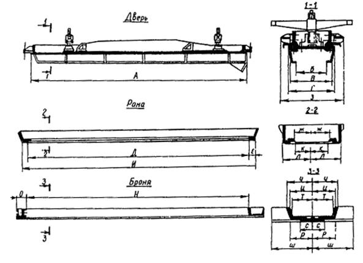
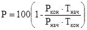

ВЕДОМСТВЕННЫЕ СТРОИТЕЛЬНЫЕ НОРМЫ
МОНТАЖ
ТЕХНОЛОГИЧЕСКОГО
ОБОРУДОВАНИЯ
И МЕТАЛЛОКОНСТРУКЦИЙ
КОКСОВЫХ БАТАРЕЙ
ВСН 517-89
Минмонтажспецстрой СССР
Министерство монтажных и специальных
строительных работ СССР
Москва 1990
РАЗРАБОТАНЫ
ГПИ Гипрометаллургмонтаж Минмонтажспецстроя СССР совместно с трестом Коксохиммонтаж Минмонтажспецстроя СССР, Гипрококсом и Всесоюзной коксохимической станцией Минчермета СССР при участии завода «Славтяжмаш» Минтяжмаша СССР и треста Коксохимтепломонтаж Минмонтажспецстроя УССР.
ВНЕСЕНЫ И ПОДГОТОВЛЕНЫ К УТВЕРЖДЕНИЮ
СО Маталлургмонтаж Минмонтажспецстроя СССР
СОГЛАСОВАНО с Минчерметом СССР 1.06.89 и Минтяжмашем СССР 12.06.89
|
Министерство монтажных и специальных строительных работ СССР (Минмонтажспецстрой СССР) |
Ведомственные строительные нормы |
ВСН 517-89 |
|
Минмонтажспецстрой СССР |
||
|
Монтаж технологического оборудования и металлоконструкций коксовых батарей |
Взамен |
|
|
СНиП III-Г.10.11.66 |
1.1. Настоящие ведомственные строительные нормы распространяются на технологическое оборудование и металлоконструкции коксовых и пекококсовых батарей (в дальнейшем - оборудование коксовых батарей) и устанавливают требования к их монтажу и индивидуальным испытаниям.
Требования норм не распространяются на устройства, механизмы и системы (муфты, редукторы, системы смазки, гидравлики и т.д.), монтаж которых выполняется в соответствии с требованиями специальных инструкций, а также на оборудование, бывшее в эксплуатации или вышедшее из ремонта.
1.2. Требования ведомственных строительных норм должны соблюдаться организациями и предприятиями Минмонтажспецстроя СССР, Минчермета СССР и Минтяжмаша СССР в части относящихся к ним требований.
1.3. ВСН разработаны в развитие требований СНиП 3.05.05-84 «Технологическое оборудование и технологические трубопроводы» в части монтажа оборудования коксовых батарей.
1.4. При проектировании и производстве монтажных работ, кроме требований ВСН, следует выполнять требования СНиП, стандартов и нормативных документов, приведенных в справочном приложении 5, технологической документации заводов-изготовителей (включая инструкции по монтажу оборудования), проектно-сметной и рабочей документации.
1.5. Монтажные работы должны выполняться специализированной организацией, имеющей опыт монтажа оборудования коксовых батарей.
1.6. Основным документом, определяющим организацию строительно-монтажных работ, является проект организации строительства (ПОС), разработанный в составе основного проекта в соответствии с требованиями СНиП 3.01.01-85.
|
Внесены СО Металлургмонтаж Минмонтажспецстроя СССР |
Утверждены
Минмонтажспецстроем СССР |
Срок введения в действие 1 января 1990 г. |
1.7. Оборудование коксовых батарей следует монтировать в соответствии с проектом производства работ (ППР), разработанным с учетом требований СНиП 3.05.05-84 и настоящих ВСН, согласованным и утвержденным в установленном порядке.
1.8. Технический надзор и контроль за качеством работ по монтажу оборудования коксовых батарей (за исключением коксовых машин) осуществляет Всесоюзная коксохимическая станция (Коксохимстанция) Минчермета СССР.
1.9. Технический надзор и контроль за качеством работ по монтажу оборудования, осуществляемые Коксохимстанцией, предусматривают:
а) участие в приемке оборудования под монтаж;
б) участие в приемке строительных конструкций и фундаментов батареи под монтаж оборудования;
в) технический надзор и пооперационный контроль за производством монтажных работ и участие в промежуточных приемках смонтированного оборудования;
г) участие в индивидуальных испытаниях смонтированного оборудования и оформлении актов его приемки для комплексного опробования;
д) участие в комплексном опробовании оборудования и оформлении актов его приемки в эксплуатацию.
Приемка, хранение и передача оборудования в монтаж
2.1. Поступавшее на склады заказчика технологическое оборудование подлежит обязательной проверке заказчиком с участием Коксохимстанции и монтажной организации с привлечением (при необходимости) представителей шефмонтажа завода-изготовителя на соответствие технической документации и техническим монтажным требованиям на проектирование, изготовление и поставку. Результаты проверки оформляются актом.
В случае обнаружения отступлений от документации заводу-изготовителю предъявляется требование ликвидации дефектов или замены оборудования.
2.2. Склады оборудования коксохимического производства должны быть оснащены грузоподъемными кранами и располагаться вне зоны капельных вод тушильных башен.
Хранение оборудования на складах должно осуществляться в соответствии с требованиями технических условий на его изготовление и поставку (справочное приложение 2).
2.3. Заказчик передает технологическое оборудование специализированной монтажной организации в зоне монтажных работ в соответствии со СНиП 3.05.05.84 в полной исправности, комплектно, в соответствии с требованиями нормативно-технической документации и технологии монтажных работ, в сроки, предусмотренные согласованными графиками.
2.4. Заказчик передает сопроводительную документацию на оборудование в соответствии с ГОСТ 24444-87 и ОСТ 24.010.01-80Е не позднее 6 мес. до начала монтажных работ.
Строительная подготовка
2.5. К началу производства работ по монтажу оборудования должны быть выполнены подготовительные работы согласно СНиП 3.01.01-85, СНиП 3.01.03-84, СНиП 3.05.05-84, ПОС и ППР.
2.6. Генподрядчик передает монтажной организации на выполнение строительно-монтажные работы проектно-сметную документацию не позднее 15 июня года, предшествующего планируемому, с отметкой заказчика о принятии к производству.
2.7. Фундаменты и опорные конструкции принимаются в соответствии со СНиП 3.05.05-84, СНиП 3.01.03-84 и рабочими чертежами, в том числе производится приемка закладных деталей для фиксации высотных отметок и осей по исполнительной схеме, выполненной строительной организацией с указанием на ней проектных и фактических отметок.
Отклонения от проектных размеров и отметок при приемке фундаментов и сооружений не должны превышать значений, приведенных в табл. 1.
Таблица 1
|
Размер, отметка, осевое смещение |
Допускаемое отклонение, мм |
|
|
Фундаменты пути коксовыталкивателя |
Размер от оси батареи до оси первой нитки пути |
±10 |
|
Размер между осями обеих ниток пути |
±10 |
|
|
Размер между осями смежных фундаментных болтов |
±10 |
|
|
Размер от оси рельса до оси фундаментного болта |
±5 |
|
|
Отметка верха фундаментных болтов |
+20; -5 |
|
|
Отметка фундамента под шпалы или опорные конструкции |
-20 |
|
|
Опорные плоскости фундамента под колонны обслуживающих площадок на подпорных стенах |
Размер от оси или фасадной линии батареи до оси опорной плоскости фундамента |
+10; -5 |
|
Размер от оси опорной плоскости фундамента до оси болтов |
±3 |
|
|
Размер между осями смежных опорных плоскостей фундаментов |
±10 |
|
|
Отметка бетона на подпорных стенах в местах опирания колонн обслуживающих площадок |
-20 |
|
|
Опорные поверхности под газовоздушные клапаны |
Отметка бетона в местах опирания газовоздушных клапанов |
±3 |
|
Болты для крепления низа анкерных колонн (в печах с боковым подводом газа) |
Размер от оси анкерных болтов до продольной оси батареи |
±5 |
|
Размер от оси анкерных болтов до оси простенков |
±3 |
|
|
Отметка верха болтов для крепления анкерных колонн |
+10; -5 |
|
|
Выемки для анкерных колонн (в печах с боковым подводом газа) |
Длина выемки в верхней фундаментной плите для крепления анкерной колонны |
±20 |
|
Размер от оси простенка до края выемки на каждую сторону |
±10 |
|
|
Закладные трубки в бортовой балке фундаментной плиты (в печах с нижним подводом газа) |
Смещение оси закладной трубки от оси простенка по горизонтали |
±10 |
|
То же по вертикали |
±10 |
|
|
Железобетонные контрфорсы |
Размер между смежными осями проемов для крепления продольных стяжек |
±10 |
|
Выпускные воронки угольной башни |
Размер между осями воронок |
|
|
Размеры выпускных отверстий в плане |
±5 |
|
|
Отметка нижней поверхности воронки |
+20; -10 |
|
|
Разные строительные конструкции |
Размер от оси угольной башни до оси колонн на площадке углезагрузочного вагона |
±20 |
|
Отметка балок под пути углезагрузочного вагона |
±10 |
|
|
Отметка перекрытий концевых промежуточных и междубатарейных площадок (по фундаментной ленте под пути углезагрузочного вагона) |
±10 |
|
|
Размеры проемов для трубопроводов и газопроводов в перекрытиях концевых и промежуточных площадок |
+25; -10 |
2.8. Кладка печей считается готовой к монтажу оборудования при условии:
а) полного окончания кладки, включая верхний ряд насадки;
б) установки на растворе рам загрузочных люков и смотровых глазков в вертикалы;
в) закладки конденсатоотводов для отвода конденсата из газопроводов в канализацию и подготовки проемов для газопроводов и трубопроводов;
г) окончания футеровки боковых и общих боровов с проемами и шанцами для шиберов и закладки в бетон газозаборных трубок;
д) очистки корнюрных и подовых каналов, а также коксовых камер;
е) уборки предохранительных щитов из регенераторов и заделки зеркал регенераторов;
ж) проверки плотности материальных швов кладки в камерах, ровности и вертикальности стен и головок простенков с фасадов;
з) проверки и очистки температурных швов в изоляционных стенах у контрфорсов;
и) очистки канавок верхних поперечных стяжек от мусора;
к) соответствия положения и конфигурации конструктивных элементов кладки печей допускаемым отклонениям, приведенным в разделе «Кладка промышленных печей» «Инструкции по кладке и футеровке промышленных печей» ВСН 367-76/ММСС СССР.
Примечания: 1. Работы, перечисленные в п. 2.8 д, е, ж, з, и, к, могут производиться совмещенно с монтажом оборудования батареи на соседних участках (захватках).
2. Готовность кладки печей к монтажу оборудования фиксируется совместным актом представителей Коксохимстанции, заказчика и монтажной организации.
2.9. До начала монтажных работ должны быть выполнены следующие подготовительные работы:
а) частичная разборка неоткидных стеллажей тепляка в местах, где они мешают монтажу армирующих устройств;
б) подготовка обоих контрфорсов со всеми шанцами и закладными деталями под монтаж продольных анкерных стяжек;
в) уборка строительного мусора с обеих сторон батареи в пределах тепляка;
г) очистка от мусора боковых и общих боровов;
д) очистка от мусора и заделка температурных швов в соответствии с проектом;
е) установка и проверка реперов на фундаментной плите, контрфорсах батареи и фундаментах путей коксовыталкивателя, а также осевых скоб на контрфорсах, подпорных стенках и по осям путей коксовыталкивателя в соответствии со схемой геодезических знаков;
ж) проверка вертикальности и ровности заплечиков и фасадных сторон обогревательных простенков;
з) очистка от опалубки и проверка на чистоту шанцев, проверка сохранности нарезки болтов, координат и отметок фактического расположения фундаментных болтов: путей коксовыталкивателя, опор обслуживающих площадок, крепления анкерных колонн и шиберов в боровах.
Геодезический контроль
2.10. Расположение реперов и скоб, необходимых для геодезического контроля фактического положения оборудования коксовых печей по высоте и в плане, дается на чертежах внутренней разбивочной сети батареи, разрабатываемых организацией, проектирующей фундаменты батареи.
2.11. Для наблюдения за осадкой батареи и руководства при выполнении монтажных работ заказчиком составляется нивелировочная сетка в следующих местах:
а) по поверхности фундаментной плиты в местах опирания анкерных колонн;
б) по верху фасонного ряда кладки дымовых патрубков в боровах или по верхнему уровню жароупорного бетона;
в) по подам коксовых камер на головках;
г) по верху печей по контрольным простенкам и контрольным вертикалам;
д) по верху обоих контрфорсов в местах прохождения путей;
е) по основаниям под шпалы или опорные металлоконструкции путей коксовыталкивателя;
ж) по поверхности подпорных стен в местах опирания колонн обслуживающих площадок;
з) по реперам, установленным в местах, указанных в п. 2.9 е. Съемка производится по оси каждого третьего простенка или печи. До начала монтажа должны быть составлены две сетки: первая (исходная) - по окончании сооружения фундаментной плиты, перед началом работ по кладке печей; вторая - по окончании кладки печей.
Общие требования
3.1. Работы по монтажу оборудования коксовых батарей выполняют в три этапа:
I этап - монтажные и пусконаладочные работы, до выполнения которых невозможен разогрев батареи;
II этап - монтажные и пусконаладочные работы, без выполнения которых невозможен перевод на постоянный обогрев, а также прочие монтажные и пусконаладочные работы по батарее;
III этап - монтажные и пусконаладочные работы, которые невозможно произвести до перевода батареи на постоянный обогрев.
I этап охватывает работы по предрастопочному монтажу, II и III этапы - по послерастопочному монтажу.
Последовательность работ см. в обязательном приложении 1.
3.2. Продолжительность предрастопочного монтажа определяется ППР. Предрастопочный монтаж в целях сокращения сроков строительства батареи может производиться совмещенно с огнеупорными работами по мере готовности кладки отдельных участков (захваток) батареи.
Послерастопочный монтаж не должен превышать продолжительность разогрева печей, устанавливаемую Коксохимстанцией для каждой батареи.
3.3. Демонтаж или передвижку тепляка производят в каждом отдельном случае по согласованию с Коксохимстанцией после окончания кладки, установки анкеража, закладки внутренних топок и зеркал камер, предохранения кладки от атмосферных осадков и создания условий, обеспечивающих положительную температуру кладки в зимний период.
3.4. К началу предрастопочного монтажа необходимо иметь готовность кладки на участке не менее 15 смежных печей.
Последующая завершаемая кладкой группа печей должна примыкать к предыдущей.
3.5. Производить монтаж оборудования на разных участках батареи с разрывами между ними не разрешается.
3.6. Привязку монтируемого оборудования выполняют с учетом следующих требований:
все оборудование при монтаже батареи в холодном состоянии привязывается к продольной оси батареи, к осям крайних и средних печей и осям обогревательных простенков;
при невозможности выполнить замеры непосредственно от продольной оси батареи привязка оборудования производится к фасадным линиям батареи;
оси и отметки путей коксовых машин должны быть увязаны с соответствующими путями смежных батарей;
после перевода батареи на постоянный обогрев должна быть проверена взаимоувязка размеров и отметок путей коксовых машин с фасадными линиями батареи и отметкой пода печей.
3.7. Выверка оборудования производится в соответствии с технической документацией заводов-изготовителей и рабочими чертежами.
В технической документации указываются базы для выверки, допускаемые отклонения по высоте и в плане, а также содержатся методики выполнения измерений при монтаже и испытаниях, соответствующие ГСИ ГОСТ 8.010-72.
3.8. Контрольно-выверочные операции при монтаже оборудования производят с помощью геодезических приборов (теодолиты, нивелиры, лазерные визиры) и измерительного инструмента (рулетки, осевые струны, отвесы, линейки, шаблоны, рамные уровни, щупы).
3.9. Результаты монтажа оборудования отражаются в монтажных формулярах или монтажных чертежах, на которых проставляются проектные и фактические размеры и отметки. В них указывается, что оборудование смонтировано в соответствии с проектом и их подписывают представители монтажной организации, заказчика и шефмонтажа, если последний участвовал в работе. Отклонения от проектной документации должны быть согласованы с проектной организацией.
3.10. Расконсервация рабочих поверхностей оборудования производится в соответствии с ГОСТ 9.014-78 и указаниями в технической документации заводов-изготовителей.
Закладная арматура печей
4.1. При установке закладной арматуры в кладку печей отклонения от осей, проектных отмоток и размеров не должны превышать указанных в табл. 2.
Таблица 2
|
Осевое смещение, размер, отметка |
Допускаемое отклонение, мм |
|
|
Чугунные вкладыши корнюров |
Смещение оси вкладыша от оси корнюра |
±3 |
|
Наблюдательные глазки регенераторов |
Отметка оси глазка |
±10 |
|
Рамы и крышки загрузочных люков |
Размер между осями рам по длине камеры коксования |
±5 |
|
Смещение центра рамы от оси камеры коксования |
±3 |
|
|
Верхние наблюдательные глазки |
Размер между осями седел смежных глазков по длине простенка |
±3 |
|
Смещение оси седла глазка от оси вертикала |
±5 |
Армирующие устройства и двери
Общие требования
4.2. Брони, рамы и двери до передачи в монтаж проверяются в полном объеме поставки, при этом должны соблюдаться следующие требования:
фактические размеры изделий, приведенные на чертеже, должны соответствовать проектным в пределах допусков, указанных в табл. 3 (проверяются обмерами и металлическими шаблонами);
Таблица 3
|
Размер |
Допускаемое отклонение, мм |
Конструкция |
Размер |
Допускаемое отклонение, мм |
|
|
Дверь |
А |
±5 |
Рама |
К |
±2 |
|
Б |
±3 |
Л |
±2 |
||
|
В |
±3 |
Броня |
Н |
+10; -5 |
|
|
Г |
±3 |
О |
±1 |
||
|
З |
0; -4 |
Р |
+2; -4 |
||
|
С |
±2 |
||||
|
Рама |
Д |
+6;-3 |
Т |
+2; -1 |
|
|
Е |
0; -6 |
Ц |
+2,5; -1 |
||
|
И |
+5; -10; ±12* |
Ч |
+2; -4 |
||
|
Ж |
±2 |
Ш |
0; -5 |
* Для камер высотой 7 м и более.

гнезда Т-образных болтов в бронях должны совпадать с ответными проушинами в рамах в пределах допусков, указанных в технической документации заводов-изготовителей (проверяется шаблоном);
изделия должны соответствовать техническим условиям на изготовление, поставку и техническим монтажным требованиям на проектирование, изготовление и поставку.
Осмотром проверяют состояние зеркал - литье не должно иметь неровностей, приливов, раковин, трещин, расслоений и других дефектов.
Допуски на размеры, не указанные на чертеже, должны соответствовать III классу точности по ГОСТ 26645-86 «Отливки из металлов и сплавов. Допуски размеров, массы и припуски на механическую обработку».
Для осмотра и обмеров брони, рамы и двери раскладывают в один ряд.
Неудовлетворительные по состоянию зеркал и размерам, а также другим показателям изделия подлежат браковке.
Взаимозаменяемость броней, рам и дверей проверяют контрольной сборкой на стенде, двух броней и дверной рамы с последовательной установкой двери коксовой и машинной сторон.
4.3. Перед монтажом анкерных колонн подвергают выборочной проверке (в объеме 15 % полного комплекта) размеры и качество изготовления поперечных и продольных анкерных стяжек. При этом все анкерные колонны подвергают внешнему осмотру и контролю на прямолинейность. Допускаемые отклонения приведены в табл. 4.
Таблица 4
|
Размер, деформация |
Допускаемое отклонение, мм |
|
|
Анкерная колонна |
Общая длина колонны |
+5; -10 |
|
Ширина колонны от оси в обе стороны |
±2 |
|
|
Прогиб колонны в двух взаимно перпендикулярных плоскостях |
±5 |
|
|
Размер от подошвы колонны до центра прижимного болта |
±3 |
|
|
Размер между центрами прижимных болтов в двух направлениях |
±3 |
|
|
Анкерная колонна промежуточная |
Общая длина колонны |
±5 |
|
Прогиб колонны в двух взаимно перпендикулярных плоскостях |
±5 |
|
|
Нижняя или верхняя поперечная стяжка |
Общая длина стяжки |
±20 |
|
Длина нарезной части стяжки |
1 мм на 100 мм длины |
|
|
Искривление нарезной части стяжки |
Не допускается |
Примечание. Контроль прогиба анкерных колонн осуществляется с помощью струны при боковом положении контролируемых поверхностей.
4.4. Спиральные пружины армирования передают в монтаж вместе с техническими паспортами или ведомостями испытания пружин на заводе-изготовителе; каждая пружина должна быть снабжена закрепленной на ней биркой с номером пружины.
До передачи в монтаж заказчик совместно с Коксохимстанцией производит выборочную проверку паспортной характеристики пружин в количестве 10 % общего их количества.
Основными условиями, определяющими пригодность пружин, являются отсутствие остаточных деформаций и заданная высота пружин.
4.5. Сдвоенные пружины верхних и нижних поперечных стяжек, комплектуются Коксохимстанцией на основании заводских паспортов с равными отклонениями от проектных размеров.
Нагрузки на пружины армирования отдельных узлов устанавливаются в
Брони
4.6. Перед установкой броней:
заполняют огнеупорным бетоном углубления броней, обращенные к кладке батареи, при этом уровень бетона должен быть на 10 мм ниже выступающих ребер, а бетонирование произведено не менее чем за 36 ч до монтажа броней при температуре не ниже 5 °С;
в гнезда кладки с машинной и коксовой сторон батареи укладывают по периметру прилегания броней специальную четырехжильную асбестовую набивку диаметром 30 мм; укладка выполняется непрерывно с образованием над каждым простенком петли для зачеканки верха броней. Для предохранения кладки от разрушения при установке броней на выступ корнюрной зоны вдоль батареи укладывают асбестовый шнур диаметром 15 мм.
4.7. Доставленную к монтажному проему броню переводят в вертикальное положение, разворачивают параллельно фронту батареи и транспортируют к месту установки подвесным краном тепляка со строповкой верха брони за рым-болты, поставляемые в комплекте с бронями заводом-изготовителем (аналогичные операции проводятся при монтаже рам).
Бронь устанавливают вертикально и соосно с отопительным простенком, соблюдая следующие условия:
кладка обогревательных простенков должна симметрично выступать с обеих сторон корпуса брони по всей высоте;
брони не должны выходить ни одной из своих сторон за обрезы кладки.
несовпадение фасадных плоскостей смежных броней не должно превышать 3 мм;
несовпадение по высоте поверхностей двух смежных броней в месте установки порога не должно превышать 2 мм;
верхние и нижние зазоры смежных броней должны быть не менее 6 и не более 16 мм и должны уплотняться асбестовым шнуром.
Установленную броню временно раскрепляют деревянными распорками, один конец которых упирается в броню, другой - прибивают к настилу стеллажей тепляка. Распорки снимают после установки и утяжки временных стяжных болтов.
Допускается увеличение на 3 мм указанных выше зазоров между броней и кладкой после установки дверных рам и крепления их к броням болтами.
Результаты замеров прилегания броней к кладке батареи заносятся техническим персоналом Коксохимстанции в таблицу замеров (обязательное приложение 3).
Количество временных стяжек по высоте брони определяется в ППР.
По окончании утяжки броней петли асбестовой набивки перерезают, и концы шнура зачеканивают между кладкой и крыльями броней; одновременно уплотняют верхние и нижние стыки броней кусками асбестового шнура.
Анкерные колонны и стяжки
4.9. До начала предрастопочного монтажа на анкерных колоннах собирают пружинные узлы армирования. В собранных узлах не должно быть перекосов и заклинивания пружин.
4.10. Монтаж анкерных колонн начинают после установки, рихтовки, затяжки и приемки броней Коксохимстанцией на участке не менее 15 печей.
4.11. Доставленную к монтажному проему анкерную колонну переводят в вертикальное положение и транспортируют подвесным краном тепляка к месту установки с последующим разворотом в проектное положение напротив рабочего простенка. Верх установленной колонны временно закрепляют стальным хомутом, концы которого вставляют в отверстия под рым-болты в утянутых бронях (приспособления удаляются после закрепления колонн поперечными анкерными стяжками). Монтаж колонн ведут параллельно с машинной и коксовой сторон батареи.
Установленные анкерные колонны должны удовлетворять следующим требованиям:
расстояние между осями смежных колонн должно быть одинаковым с отклонением от проектного размера не более ±5 мм (при этом разметку осей осуществляют от наружного габарита колонн в местах замеров);
фактические отметки верха кронштейнов под обслуживающие площадки должны соответствовать проектным с отклонением от 0 до -10 мм;
допустимые отклонения колонн от вертикальности в фасадной плоскости батареи не должны превышать 10 мм (проверка на «веерность» колонн); проверяются отвесом по осевым рискам на колоннах.
4.12. При окончательном закреплении анкерных колонн производят следующие работы:
пальцы упорных стаканов пружинных узлов армирования, а также плоскости прилегания упоров на бронях смазывают графитовой смазкой;
завинчивают гайки нижних и верхних анкерных стяжек с обеих сторон батареи одного и того же простенка;
на батареях с боковым подводом коксового газа проверяют положение подошв колонн, смазывают поверхности опирания прижимных накладок и затягивают гайки фундаментных болтов. При затяжке не разрешается удлинять стандартные ключи с помощью надставок;
колонны малого анкеража закрепляют траверсами за анкерные колонны;
по окончании затяжки колонн в соответствии с проектом даются нагрузки на пружины узлов армирования, при этом нагрузку пружин узлов армирования так же, как и пружин верхних и нижних стяжек, производят под контролем Коксохимстанции.
4.13. При монтаже колонн до нагрузки пружин вверху между бронями и анкерными колоннами устанавливают временные отжимные балки.
Для предупреждения засорения полости между колонной, отжимной балкой и пакетом над верхними торцами балки и пакета устанавливают крышки из десятимиллиметровых досок длиной 350 мм с заклиниванием их после установки колонн (во избежание выпадения).
До разогрева батареи деревянные крышки должны быть удалены, при этом проверяют чистоту зазоров между колоннами и отжимными балками и пакетами, а также между колоннами и бронями.
4.14. Удаление временных стяжек производят после окончательного закрепления анкерных колон и приемки их представителями Коксохимстанции.
4.15. До разогрева батареи брони должны быть закреплены нажимными болтами анкерных колонн во избежание подъема броней при росте кладки.
4.16. Коксохимстанция производит замеры стрел прогибов каждой анкерной колонны как в свободном состоянии, так и при передаче нагрузок на колонны и фиксирует эти замеры в таблице замеров стрел прогибов анкерных колонн (обязательное приложение 4).
4.17. При монтаже верхних поперечных анкерных стяжек должна быть обеспечена длина выступающих концов стяжек с машинной и коксовой сторон в соответствии с проектом с отклонением не более 20 мм.
4.18. Нарезанные концы нижних анкерных стяжек должны быть очищены, смазаны и предохранены ветошью или деревянными брусками от повреждений при производстве огнеупорных работ.
4.19. Под верхние поперечные стяжки (во избежание их провисания) до окончания роста батареи должны быть уложены деревянные подкладки одной толщины, располагаемые над канавками верха батареи на расстоянии 2 - 2,5 м друг от друга.
4.20. Стыковка отдельных звеньев продольных анкерных стяжек производится с соблюдением прямолинейности стяжек, при этом допускаемое отклонение от прямолинейности собранных элементов не должно превышать 5 мм.
Не допускается совпадение стыковочных планок продольных стяжек с поперечными стяжками.
4.21. Для обеспечения заданной нагрузки на каждую продольную стяжку и отпуска стяжек во время разогрева батареи у контрфорсов на стяжках устанавливают приспособления для их поддержания.
4.22. Пружины продольных анкерных стяжек так же, как и пружины верхних и нижних поперечных анкерных стяжек, перед разогревом затягивают до нагрузок, предусмотренных проектом.
Рамы и двери
4.23. Перед установкой рамы по внутреннему ее пазу закладывается специальная трехжильная асбестовая набивка, а по наружному пазу - четырехжильная набивка диаметром 30 мм. Набивку приклеивают к раме жидким стеклом или сульфитно-спиртовой бардой.
4.24. Затяжку Т-образных болтов, крепящих дверную раму к броне, необходимо производить равномерно, постепенно переходя от середины рамы вверх и вниз с обеих ее сторон, следя за проектным положением асбестовой набивки, проверяя величину зазоров между дверной рамой и бронями и не допуская деформации рамы; при этом необходимо использовать дополнительные стопорные болты с обеих сторон рамы, которые служат упорами, предотвращающими скручивание рамы при ее затяжке; после окончательной затяжки рамы эти болты должны быть завинчены до упора.
4.25. После окончательной затяжки дверных рам проверяют:
правильность расположения головок Т-образных болтов (насечки на торцах болтов должны быть расположены вертикально);
ширину в свету дверных рам на трех уровнях (допускаемое отклонение ±6 мм);
прилегание рамы к броням на уровнях верхних и нижних ригелей и посередине между ними, при этом зазоры между рамой и броней должны составлять 12 - 15 мм - для рам с открытой канавкой под шнур со стороны печного проема и 2 - 5 мм - для рам с закрытой канавкой, а выступы рам за кромку брони в сторону камеры не должны превышать 2 мм;
величину зазоров между бронями и заплечиками кладки (проверяется вторично), причем допускается увеличение первоначальных зазоров, указанных в п. 4.8, на 3 мм;
тщательность уплотнения стыков между смежными бронями;
отклонение от проектного профиля рамы по плоскости прилегания уплотняющей рамки дверей (допускаемое отклонение 2 мм проверяется струной, натянутой вдоль зеркала рамы).
Перед установкой дверей повторно проверяют профиль рамы, при этом допускается прогиб рамы относительно проектного профиля до 3 мм в сторону печи (допускаемое отклонение ±2 мм).
4.26. Поверхность порога, устанавливаемого на две смежные брони, должна быть на 7 - 10 мм ниже пода камеры; зазоры между порогами, бронями и рамами должны быть уплотнены асбестовой набивкой.
Окончательную регулировку порогов по отметкам и горизонтальности производят после роста батареи установкой П-образных подкладок или посредством строгания порогов (строгание порогов и изготовление П-образных подкладок являются обязанностью заказчика).
4.27. Двери поставляют в собранном виде, включая уплотняющие рамки с нажимными цилиндриками, асбестовыми прокладками и кирпичедержателями, а также с прижимными затворами, нагруженными с проектным усилием.
Футеровку дверей производят в верхнем положении кирпичедержателей при температуре не ниже 5 °С. Поворот дверей футеровкой вниз выполняют только после полного схватывания раствора, после чего двери выкладываются на специальных подкладках, предохраняющих падение набок.
Для предохранения уплотняющих рамок и футеровки от повреждений поворот дверей осуществляют на горизонтальном вращающемся станке, а подъемы - с использованием траверс, обеспечивающих захват дверей за специальные грузозахватные устройства в дверях.
Перед установкой на камеру двери выставляют самоходными кранами в ремонтных станциях батареи. Подачу в гараж осуществляют с помощью траверсы, поднимающей дверь за карманы.
Установку дверей на очередную камеру производят коксовыталкивателем и двересъемной машиной после ломки временных зеркал и очистки головок простенков от мусора. Последовательность и время установки дверей определяются Коксохимстанцией.
Предварительную обтяжку уплотняющих рамок дверей следует производить перед загрузкой батареи шихтой, причем щуп толщиной 0,15 мм не должен проходить между ножом уплотняющей рамки и зеркалом рамы. Окончательную обтяжку (до устранения пропуска газа) производят после загрузки камер. Предварительную обтяжку уплотняющих рамок дверей перед загрузкой батареи шихтой производят в соответствии с инструкцией по эксплуатации дверей.
После установки на печь дверей с пружинными затворами и до обтяжки их уплотняющих рамок необходимо произвести проверку: затяжки пружин в узлах ригельных затворов, наличия зазоров между гайкой и тарелкой на штоке пружины, наличия зазоров между ригелем и рычагом, опорными катками и рамой на двух ригельных дверях - в соответствии с инструкцией по эксплуатации дверей.
Газопроводящая арматура отопления печей с боковым и нижним подводом газа
5.1. Реверсивные клапаны для газа, воздуха и продуктов горения (газовоздушные клапаны) до передачи в монтаж подвергаются проверке на герметичность заказчиком, при этом:
газовый клапан для печей с комбинированным обогревом и боковым подводом отопительного газа испытывают подачей под клапан сжатого воздуха давлением 4410 Па (450 мм вод. ст.) при вместимости воздухосборника 0,05 м3. Не допускается падение давления свыше 2450 Па в течение 5 мин;
газовый клапан для печей с комбинированным обогревом и нижним подводом коксового газа при подаче доменного газа через газовоздушный клапан испытанию на герметичность не подвергают;
клапан для воздуха проверяют на плотность прилегания крышки к уплотняющей поверхности корпуса щупом толщиной 0,05 мм. Щуп не должен проходить под крышкой;
клапан для продуктов горения испытывают наливом воды на высоту 100 мм. Просачивание воды под клапан не допускается; при испытании не разрешается смазка уплотняющих поверхностей; посадка клапана на седло должна производиться только с помощью ведущего рычага.
5.2. Все без исключения регулировочные клапаны, а также стопорные и реверсивные краны для доменного и коксового газов заказчик передает в монтаж испытанными на герметичность со сдачей по акту Коксохимстанции. Условия проведения пневматических испытаний приведены в табл. 5.
Перед испытанием реверсивные краны должны быть промыты керосином, а пробки смазаны тонким слоем смазки.
Таблица 5
|
Отопительный газ |
Испытательное давление, Па |
Вместимость воздухосборника, м3 |
Длительность испытания, мин |
Допускаемое падение давления, Па |
|
|
Клапан регулировочный |
Доменный |
20000 |
0,05 |
10 |
2000 |
|
Кран стопорный |
Доменный |
20000 |
0,05 |
10 |
500 |
|
Кран реверсивный |
Доменный |
20000 |
0,05 |
10 |
2000 |
|
Кран стопорный |
Коксовый |
10000 |
0,01 |
10 |
100 |
|
Кран реверсивный |
Коксовый |
10000 |
0,01 |
10 |
100 |
Испытания реверсивных кранов производятся во всех рабочих положениях пробки, соответствующих закрытому крану.
Перед каждым испытанием пробку несколько раз поворачивают в обе стороны, при этом пробка должна поворачиваться плавно, а усилие на рычаге ключа длиной 305 мм не должно превышать 150 Н (15 кгс).
Испытание стопорных кранов производят поочередно в обоих положениях пробки, соответствующих закрытому крану.
Масленки на кранах во время испытаний должны быть заполнены смазкой.
Стопорные и реверсивные краны для доменного и коксового газов испытывают также на герметичность соединений в положении пробки «Открыто» с погружением их в ванну с водой, причем пропуски воздуха через соединения не допускаются: у реверсивных кранов - при заглушенном боковом патрубке, соединенном с внутренней поверхностью пробки, у стопорных кранов - при закрытом выходном отверстии.
Риски на квадратах пробок должны соответствовать осям проходных отверстий.
Кантовочный рычаг, надеваемый на квадрат пробки, должен иметь свободное движение в плоскости, перпендикулярной оси газопровода.
Продольные пазы кантовочных рычагов должны обеспечивать свободное движение пальца зажима на кантовочной штанге.
Уплотняющие поверхности воздушных клапанов обезграфичивающего устройства не должны иметь раковин и других дефектов, местные зазоры между уплотняющими поверхностями не должны быть более 0,1 мм.
Прочие детали арматуры должны соответствовать проектным размерам и не иметь видимых дефектов.
5.3. Перед испытанием газовоздушных клапанов, стопорных и реверсивных кранов для коксового и доменного газов необходимо:
осмотреть корпуса газовоздушных клапанов и кранов, проверить состояние притертых поверхностей клапанных тарелок, воздушных крышек и поверхностей, к которым они прилегают, проверить состояние притертых поверхностей пробок и корпусов стопорных и реверсивных кранов;
проверить соответствие величины перекрытия окон в корпусе реверсивных кранов при нейтральном положении пробки технической документации;
проверить соответствие начала открытия и окончания закрытия реверсивных кранов, газовых клапанов, воздушных крышек и клапанов продуктов горения технической документации, при этом отклонение высоты подъема клапанных тарелок для газа, воздуха и продуктов горения допускается не более ±5 мм, а отклонение от указанных на чертежах угловых зависимостей допускается в пределах 1°;
проверить соответствие положения дросселя тяги указателю и надписям на шкале.
5.4. При установке переходных патрубков в подовые каналы батареи должны быть выдержаны проектные зазоры между торцом переходных патрубков и гнездом подового канала, а также между стенками патрубка и гнезда с отклонением не более 5 мм.
Зазоры между стенками патрубка и гнездом подового канала должны быть заполнены слабоуплотненным асбестовым шнуром, при этом последний виток шнура должен находиться на глубине 20 - 25 мм от фасада кладки.
Окончательное уплотнение асбестового шнура в зазорах необходимо производить после окончания роста батареи.
5.5. Установленные газовоздушные клапаны выверяют в плане и по высоте, при этом:
каждый десятый клапан выверяется по высоте нивелиром относительно репера, а промежуточные клапаны - линейкой и уровнем. Отклонение фактических отметок клапанов по валам кулачковых механизмов от проектных не должно превышать ±5 мм;
центры всех штоков клапанов должны находиться на одной оси с отклонением не более ±5 мм;
все приводные рычаги газовоздушных клапанов должны находиться в одной вертикальной плоскости с отклонением не более ±2 мм.
5.6. При использовании доменного газа смонтированные газовоздушные клапаны должны быть испытаны на герметичность совместно с регулировочными клапанами или со стопорными и реверсивными кранами и распределительным газопроводом доменного газа (см. раздел 6).
5.7. При монтаже арматуры отопления печей коксовым газом запрещается производить изгиб газоподводящих труб, ранее подсоединенных к чугунным вкладышам корнюров.
В случае несовпадения стыков труб с воздушными клапанами обезграфичивания необходимо отсоединить трубы от чугунных вкладышей для их последующей подгонки.
5.8. Все муфтовые соединения выполняют с подмоткой пенькой, пропитанной в смеси сурика с олифой.
5.9. Смонтированная арматура отопления печей коксовым газом подлежит проверке на правильность сборки схемы и испытанию совместно с распределительным газопроводом (см. раздел 6).
Газоподводящая арматура отопления печей с нижним подводом газа (дополнительные требования)
5.10. Газоподводящие трубки и трубы глазков для печей с нижним подводом газа устанавливают в фундаментной плите с применением кондукторов, при этом производится разбивка от продольной оси батареи и от оси каждой печи.
Фактические установочные размеры должны соответствовать проектным с отклонениями, не превышающими в плане ±3 мм и по высоте от 0 до -5 мм.
Отклонение газоподводящих трубок от вертикали не должно превышать ±2 мм.
Правильность установки трубок обеспечивается применением кондукторов, устанавливаемых совмещением осевых рисок на последних с продольными и поперечными осями печей, при этом оси фиксируются натянутыми проволоками или световым лучом лазерных визиров.
5.11. Все газоподводящие трубки на время разогрева батареи должны быть плотно закрыты пробками из ветоши до верха фундаментной плиты, а снизу в компенсирующие муфты должны быть ввернуты пробки с паронитовыми прокладками.
Перед переводом батареи на постоянный обогрев из газоподводящих трубок должны быть удалены пробки из ветоши, а трубки тщательно очищены.
5.12. Смонтированная арматура отопления должна быть испытана на участке до кранов на плотность соединений до присоединения ее к газоподводящим трубкам верхней фундаментной плиты; на время испытаний все боковые отводы от коллекторов к газоподводящим трубкам должны быть заглушены.
В печах с нижним подводом газа все стыки, сварные, резьбовые и фланцевые соединения на участке после реверсивных кранов (по ходу газа) испытывают давлением 9800 Па с обмыливанием соединений; результаты испытаний считаются удовлетворительными при отсутствии видимых пропусков воздуха.
5.13. Присоединение боковых отводов от коллекторов к газоподводящим трубкам, заложенным в фундаментной плите батареи, производят после удовлетворительных результатов испытаний плотности соединений отопительной арматуры.
5.14. Регулировку угла поворота каждого реверсивного крана производят при испытании кантовочного механизма.
Кантовочный механизм
5.15. До передачи в монтаж канатов кантовочного механизма заказчик подвергает их в течение трех суток предварительному стендовому растяжению под нагрузкой, указанной в характеристике лебедки, причем разрывы проволочек в тросе не допускаются.
Штанги должны быть постоянного сечения и не иметь искривлений; до установки штанги подвергают предварительному растяжению с усилием, указанным в характеристике лебедки.
Резьба в стяжке и соединительных муфтах не должна иметь повреждений.
Сдаваемые в монтаж угловые, отклоняющие и поддерживающие ролики и сектора должны легко проворачиваться вручную; ролики с поврежденными ребордами подлежат отбраковке.
При приемке в монтаж лебедки обезграфичивающего устройства необходимо проверить:
правильность фиксации кривошипа в вертикальных и горизонтальных положениях, при этом допускается отклонение центра пальца кривошипа от вертикального и горизонтального положений не более ±2 мм;
величину хода пальца переводного рычага от его среднего положения (соответствующего горизонтальному положению кривошипа) в крайнее рабочее положение; допускаемое отклонение ±3 мм.
5.16. При монтаже кантовочной лебедки допускаются:
отклонение от горизонтальности не более 0,5 мм на 1 м (по раме);
параллельное смещение оси рамы от проектной не более ±10 мм.
Угловое отклонение оси рамы от проектной оси не допускается.
Подливку цементным раствором осуществляют только после проверки правильности установки лебедки. Ось лебедки фиксируется рисками, наносимыми на раме заводом-изготовителем.
5.17. В нейтральном положении кантовочного механизма (при котором центр вала лебедки и риска на носке шайбы находятся на одной отвесной линии) переводные рычаги лебедки должны быть вертикальны, при этом нить отвеса, проходящая через центр вала рычага, должна проходить через центр пальцев для кропления штанг с отклонением не более ±2 мм.
5.18. При прокручивании кантовочной лебедки от ручного привода усилием одного человека должно быть обеспечено следующее:
симметричный в обе стороны относительно вертикальной оси ход рычага с отклонением от проектного хода не более ±3 мм;
полное прилегание ролика рычага к поверхности катания эксцентриковой шайбы;
расположение звездочек командоаппарата и звездочек редуктора в одной плоскости.
5.19. Все ролики кантовочного механизма до установки должны быть отревизованы, смазочное канавки прочищены и валики смазаны.
5.20. При установке поддерживающих роликов отклонение в плане и по высоте от проектного допускается не более ±5 мм.
Правильность установки роликов в плане проверяется отвесом осевой проволоки, опущенным по касательной к канавке роликов, при этом нить отвеса должна совпадать с серединой канавки в пределах допуска. Высота роликов выверяется с помощью нивелира или лазерного визира.
Положение установленных поддерживающих, угловых и отклоняющих роликов, а также секторов должно обеспечивать правильное набегание и сход канатов кантовочного механизма без трения и заедания о реборды роликов.
Окончательное закрепление роликов производят после проверки правильности их расположения с помощью геодезической съемки до перевода батареи на постоянный обогрев.
5.21. Стыки штанг должны быть расположены в местах, предусмотренных проектом, и не должны совпадать с кулачками.
5.22. Присоединение штанг к лебедкам и окончательное закрепление канатов к штангам, натяжение штанг с помощью проектных стяжек и освобождение штанг от временного закрепления производят при вертикальном положении переводных рычагов кантовочной лебедки и кривошипа обезграфичивающей лебедки.
5.23. До начала испытания кантовочного механизма должны быть закончены монтаж и испытание системы централизованной смазки реверсивных кранов коксового газа.
5.24. Испытание, регулировку и наладку кантовочного механизма производят по этапам:
I этап - опробование кантовочной и обезграфичивающей лебедок вхолостую (штанги кантовочного механизма отсоединены) от ручного привода, электродвигателя и пневмопривода.
Одновременно проверяют по высотным отметкам и осям кантовочных штанг положение газовоздушных клапанов (см. п. 5.5) и производят окончательную заделку переходных и дымовых патрубков.
II этап - первоначальное опробование кантовочного механизма вхолостую от ручных приводов с подключенными к лебедкам штангами (тяговые штанги свободно лежат на поддерживающих роликах, отсоединенные от газовоздушных клапанов, реверсивных кранов и клапанов системы обезграфичивания) с последующим переходом на электрические и пневматические приводы.
При прокручивании лебедок проверяют действие кантовочного механизма, при этом должно быть обеспечено следующее:
плавное движение механизма;
легкое прохождение канатов по желобам угловых и отклоняющих роликов без накатывания их на реборды;
надежное крепление и правильная работа всех роликов;
надежное соединение штанг между собой и штанг с канатами, а также крепление штанг к рычагам лебедок;
соответствие фактического хода штанг и переводных рычагов лебедок проектному; допускается отклонение величины полухода штанг не более ±3 мм.
Измерение величины хода штанг обезграфичивающего устройства производится при переводе кривошипа из горизонтального положения в вертикальное;
допускаемое отклонение величины полухода штанг ±5 мм.
При Нормальной работе кантовочного механизма должно быть произведено не менее 20 кантовок.
III этап - испытание кантовочного механизма под частичной нагрузкой.
До начала испытания проверяют правильность сборки схем газовоздушных клапанов, а также работу рычагов реверсивных кранов и рычагов воздушных клапанов системы обезграфичивания.
Далее к кантовочным штангам присоединяют рычаги реверсивных кранов (краны еще не подключены к печам) и крышки воздушных клапанов системы обезграфичивания (при установленных на чугунных вкладышах газораспределительных каналов заглушек из асбестового картона).
При испытании проверяют соблюдение условий II этапа, а также следующих дополнительных требований:
а) насаженные на квадраты пробок реверсивных кранов рычаги не должны иметь люфта в направлении кантовки (проверяется щупом толщиной 0,1 мм);
б) реверсивные краны должны правильно функционировать, при этом:
в положении «Газ открыт» - кран полностью открыт, риска на пробке вертикальна;
в положении «Пауза кантовки» - кран закрыт, риска на пробке под углом 45°, рычаг крана вертикален;
в положении «Газ закрыт» - кран закрыт, риска на пробке горизонтальна.
Затем к ведущим рычагам газовоздушных клапанов (предварительно закрепленным к кантовочным штангам) должны быть присоединены газовые тарельчатые клапаны (при закрытых регулировочных клапанах), воздушные крышки (воздушные отверстия перекрыты пластинками из листовой стали толщиной 1 мм или листовым асбестом), а также золотниковые клапаны или реверсивные краны доменного газа (стопорные краны газовых клапанов закрыты).
Во время испытания должно быть обеспечено плавное, свободное вращение рычагов газовоздушных клапанов на пальцах зажима, крепящих их к штангам.
IV этап - испытание кантовочного механизма под полной нагрузкой (производится по схеме обогрева печей при температуре 600 °С).
На этом этапе подключают тарельчатые клапаны продуктов горения. Во время испытания деревянные подпорки у штоков клапанов продуктов горения не снимают (подпорки удаляют при переводе батареи на постоянный обогрев).
Испытание проводят последовательно: от ручного привода, затем от электродвигателя и пневмопривода.
При испытании необходимо обеспечить:
соответствие начала открытия и полного закрытия тарельчатых и золотниковых клапанов, реверсивных кранов и воздушных крышек положениям ведущих рычагов;
отклонение от указанных на чертежах взаимоположений в пределах 1°;
отклонение высоты подъема клапанных тарелок и воздушных крышек от проектной не более ±5 мм;
отклонение величины полухода штанг от проектной не более ±5 мм.
Движение клапанных тарелок и воздушных крышек должно быть плавным, без рывков; штоки не должны зависать при опускании и заклиниваться при подъеме.
При испытании кантовочного механизма должны быть проверены схемы аварийной остановки обогрева при обрыве канатов.
Испытание считается законченным при условии бесперебойной работы кантовочного механизма в эксплуатационном режиме (кантовка через каждые 20 мин) в течение 24 ч.
Работы по переводу печей на постоянный обогрев, по регулировке и наладке кантовочного устройства осуществляются под наблюдением представителей Коксохимстанции.
Шиберы боровов
5.25. При приемке шиберов в монтаж проверяют:
правильность геометрических размеров, причем отклонения фактических размеров от проектных допускаются не более ±10 мм;
совпадение болтовых отверстий в осевом валу и крыльях шиберов.
5.26. При установке валов шиберов отклонение валов от вертикальности не должно превышать ±2 мм на длину вала.
5.27. Отклонение фактических зазоров от проектных между крыльями шиберов и футеровкой стен боровов, а также выстилкой подов допускается не более ±25 мм; исправление зазора может быть осуществлено путем плавной подтески футеровки по всему периметру поворота крыльев шибера.
5.28. Смонтированные шиберы после полного затвердения цементной подливки подпятника должны быть испытаны на легкость и плавность поворота от руки и привода.
5.29. На головки вала шибера должны быть нанесены риски, указывающие положение шибера в борове.
5.30. Болты, крепящие крылья шиберов, должны быть затянуты гайками и контргайками.
5.31. Для исключения полного перекрытия борова при аварийных ситуациях в соответствии с проектом устанавливаются ограничители поворота шиберов.
6.1. Перед передачей в монтаж все задвижки газопроводов заказчик подвергает ревизии и гидравлическому испытанию с двух сторон давлением 98000 Па.
6.2. При проверке опорных конструкций газопровода отклонение от проектных высотных отметок опор допускается не более ±5 мм.
6.3. Сборка и сварка подводящих и распределительных газопроводов выполняются в соответствии с «Правилами безопасности в газовом хозяйстве предприятий черной металлургии» ПБГЧМ-87 и СНиП III-29-76 «Газоснабжение. Внутренние устройства. Наружные сети и сооружения».
6.4. Подводящие и распределительные газопроводы доменного и коксового газов испытывают на плотность до врезки в них штуцеров стопорных кранов.
На фланцах в местах присоединения подводящих газопроводов к наружным сетям, а также на отводах к измерительным приборам, конденсационным горшкам и свечам перед испытанием должны быть установлены металлические заглушки с хвостовиками.
Газопроводы испытывают сжатым воздухом давлением 64000 Па (0,65 кгс/см2).
Результаты испытания считаются удовлетворительными, если величина падения давления в процентах первоначального давления в течение 2 ч не превысит 2 % и если не обнаружены неплотности сварных швов.
6.5. Величина падения давления Р (% от первоначального давления) подсчитывается по формуле

где Рнач - сумма манометрического и барометрического давлений воздуха в газопроводе в начале испытания, Па;
Ркон - то же в конце испытания, Па;
Тнач - абсолютная температура воздуха в начале испытания (273 °С плюс температура воздуха в газопроводе, °С, в начале испытания);
Ткон - то же в конце испытания.
Давление и температура воздуха в газопроводе определяются как среднее арифметическое показаний манометров и термометров, установленных на двух концах каждого коллектора с машинной и коксовой сторон батареи.
Перед испытанием температура воздуха в газопроводе должна быть уравнена с температурой окружающей среды.
6.6. После врезки и приварки штуцеров к распределительному газопроводу коксового газа и монтажа отопительной арматуры проверяют плотность сварных швов крепления штуцеров к газопроводу и плотность фланцевых соединений стопорных и реверсивных кранов испытанием распределительного газопровода в сборе с установленной арматурой (до диафрагмы включительно). Предварительно необходимо отсоединить заглушками конденсационные горшки, штуцера для свечей и фланцы у диафрагмы.
Испытания проводят в соответствии с условиями, приведенными в табл. 6.
6.7. После врезки и приварки штуцеров к распределительному газопроводу доменного газа производят испытание на плотность сварных швов в местах присоединения штуцеров к газопроводу, фланцевых соединений регулировочных клапанов (или стопорных кранов), газовых тарелок (или реверсивных кранов и золотниковых клапанов), газовоздушных клапанов.
При проведении испытаний воздухосборником служит коллектор распределительного газопровода доменного газа одной стороны батареи, который на время испытаний отсекают заглушками с обеих сторон.
Испытания проводят в соответствии с требованиями табл. 6.
Таблица 6
|
Испытываемый участок или условия проведения испытаний |
Давление, Па |
Длительность испытания, мин |
Допускаемое падение давления, % |
|
|
Подводящие и распределительные газопроводы коксового и доменного газов |
До врезки в газопроводы штуцеров стопорных кранов |
64000 |
120 |
2 |
|
Распределительный газопровод коксового газа в сборе с арматурой до диафрагмы включительно |
При установленных заглушках между фланцами штуцеров и стопорных кранов |
30000 |
30 |
10 |
|
При открытых стопорных кранах и закрытых реверсивных кранах |
10000 |
30 |
10 |
|
|
При открытых стопорных и реверсивных кранах |
10000 |
30 |
10 |
|
|
Распределительный газопровод доменного газа в сборе с арматурой |
При закрытых регулировочных клапанах или стопорных кранах |
20000 |
30 |
10 |
|
При открытых стопорных и закрытых реверсивных кранах |
20000 |
30 |
10 |
|
|
При открытых регулировочных клапанах и закрытых газовых клапанах* |
4400 |
10 |
20 |
|
|
Арматура отопления печей коксовым газом (с нижним подводом), состоящая из стопорных и реверсивных кранов, подводящих трубок коллекторов, соединительных частей и диафрагм |
При открытых стопорных и реверсивных кранах и заглушенных подводах к каждому вертикалу |
9800 |
Пропуски воздуха при проверке обмыливанием не допускаются |
|
|
Временные газопроводы коксового и доменного газов с отсоединенной арматурой |
Узел разветвления, отсоединенный заглушками от постоянного подводящего и распределительных газопроводов |
49000 |
120 |
2 |
|
Распределительный газопровод машинной стороны |
49000 |
120 |
2 |
|
|
Распределительный газопровод коксовой стороны |
49000 |
120 |
2 |
|
|
Временный распределительный газопровод коксового газа в сборе с арматурой |
С закрытыми кранами |
10000 |
30 |
10 |
|
Временный распределительный газопровод доменного газа в сборе с арматурой |
С закрытыми кранами |
20000 |
30 |
10 |
|
Соединения узлов подвода газа к выносным топкам до диафрагм включительно, в том числе для газопровода: |
||||
|
коксового газа |
Заглушки ставятся за диафрагмами, при открытых кранах |
10000 |
Пропуски воздуха при проверке обмыливанием не допускаются |
|
|
доменного газа |
Заглушки ставятся за диафрагмами |
20000 |
* Только при наличии клапанов Гречаниченко. При реверсивных кранах клапаны на плотность не испытываются.
6.8. До укладки распределительных ветвей временных газопроводов должны быть установлены временные выносные топки.
При монтаже газопроводов должна быть обеспечена прямолинейность участков коксовой и машинной сторон с отклонением не более ±15 мм на 10 м длины коллектора.
6.9. Все гидрозатворы до установки должны быть испытаны на плотность наливом воды на всю высоту конденсатоотводчика.
6.10. Продувные свечи временных газопроводов должны быть выведены выше верха батареи на 4 м.
6.11. Испытания смонтированных газопроводов проводят в соответствии с условиями, приведенными в табл. 6.
6.12. Газовые горелки устанавливаются после испытаний временных газопроводов. Оси горелок должны совпадать с осями временных топок с допускаемым отклонением не более ±10 мм.
6.13. Выявленные в процессе испытания дефектные сварные швы вырубают и вновь заваривают, после чего испытания проводят повторно.
Стояки
7.1. Трубы, колена и клапанные коробки стояков подвергают выборочной проверке в объеме 10 % полного комплекта, при этом должны соблюдаться следующие требования:
при проверке плотности прилегания крышки к колену стояка под крышкой не должен проходить щуп толщиной 0,1 мм (проверяется в нескольких местах по периметру прилегания);
фактическая высота гидрозатвора не должна отличаться от проектной более чем на ±5 мм;
тарелки клапана должны открываться и закрываться полностью.
7.2. По окончании кладки печей гнезда кладки в местах опирания стояков перекрывают: заглушкой из асбестового картона - при установке стояков в предрастопочный период или металлической заглушкой - при установке стояков в послерастопочиый период (с последующей заменой асбестовой заглушкой во время установки стояков).
На время монтажа между трубой и коленом стояка устанавливают заглушку из листовой стали или металлической фольги. Перед загрузкой соответствующей печи заглушки из листовой стали снимают с установкой новых прокладок. При установке стояков, между привалочными поверхностями клапанных коробок стояков и штуцерами газосборников укладывают прографиченный асбестовый шнур диаметром 15 - 20 мм.
7.3. Стояк устанавливают с соблюдением следующих условий:
отклонение от вертикальности допускается не более ±10 мм на высоту стояка;
параллельное смещение оси стояка от оси штуцера газосборника и оси люка печи не должно превышать ±10 мм.
По окончании роста батареи отклонение от вертикальности стояка должно оставаться в пределах допустимого, а опирание корпуса клапана на опорную конструкцию должно быть плотным.
7.4. Контргрузы клапанных коробок устанавливаются так, чтобы тарелка гидрозатвора, наполненная водой, самопроизвольно не открывалась, а открытая тарелка самопроизвольно не закрывалась.
Газосборники и перекидные газопроводы
7.5. Звенья газосборников, перекидных газопроводов и коллектора беспылевой выдачи кокса должны пройти на заводе-изготовителе поузловую контрольную сборку.
7.6. Дроссельные клапаны до их установки подлежат приемке представителем Коксохимстанции. При приемке проверяют положение клапана, диска и приводного вала, зазор между корпусом и диском, уплотнение сальников, а также наличие насечки на валу, указывающие положение дросселя.
7.7. Газосборники укладываются на опоры с соблюдением следующих требований:
отклонение от проектного уклона допускается не более ±0,001;
газосборник должен опираться на все опоры; соблюдение этого требования обеспечивается (при необходимости) установкой не более 5 монтажных подкладок с их приваркой к кронштейнам анкерных колонн;
отклонение фактической оси газосборника от проектной в плане и по высоте должно быть не более ±10 мм.
Газосборники выверяются в плане и по высоте с помощью натянутой осевой проволоки и нивелира, при этом сначала проверяют седла газосборников, затем газосборники.
7.8. После укладки газосборника на опоры производят контрольную установку нескольких стояков с коленами и клапанными коробками (в середине и по концам батареи) для проверки взаимоувязки между стояками и штуцерами газосборников.
7.9. Контргрузы рычагов гидрозатворов свечей газосборников устанавливают так, чтобы была исключена возможность самопроизвольного открывания и закрывания клапана свечи.
В автоматических гидрозатворах требуемая высота затвора обеспечивается путем регулирования стока воды.
7.10. Монтажные сварные стыки звеньев газосборников проверяют на плотность смачиванием их изнутри керосином с выдержкой не менее 12 ч. Обнаруженные при проверке дефектные сварные швы вырубают и заваривают вновь. Подварка шва не допускается.
7.11. При установке горизонтальных звеньев перекидных газопроводов отклонение от проектных уклонов допускается не более 0,001.
7.12. Сальниковый компенсатор должен устанавливаться соосно с прямым звеном газопровода с соблюдением величины развода в холодном состоянии и высоты катковых опор.
7.13. При монтаже контролируют расположение и правильность установки труб гидросмологонов.
7.14. Газосборники и перекидные газопроводы испытывают вместе на плотность подачей пара давлением 490 Па с одновременной подачей воды, нагретой до температуры 80 - 90 °С, причем не должно быть течей и пропусков пара в стыках и соединениях.
Одновременно проверяют фактическую величину гидрозатвора и сток воды из газосборника.
Обслуживающие площадки вдоль печей
8.1. При монтаже обслуживающих площадок должны соблюдаться следующие требования:
проектные расстояния между осями смежных стоек должны быть выдержаны с отклонением от размера не более ±10 мм;
стойки должны быть установлены вертикально с отклонением на высоту стойки ±5 мм;
отклонение от проектных отметок обслуживающих площадок допускается от 0 до -10 мм;
расстояния между осями каждой пары смежных поперечных балок должны быть выдержаны с отклонением от проектного размера не более ±3 мм;
не допускается укладка металлических подкладок под продольные и поперечные балки по верху стоек;
должны быть обеспечены полная посадка скользящих плоскостей поперечных балок, а также чистота и смазка скользящих опор и овальных отверстий;
наружные концы поперечных балок должны быть закреплены болтами настолько, чтобы оставалась возможность скольжения балок при росте кладки; окончательное закрепление производят после роста кладки.
8.2. Подливка подошвы стоек цементным раствором должна производиться по окончании роста кладки печей и выверки положения площадок.
8.3. К акту приемки смонтированных обслуживающих площадок должна прилагаться геодезическая схема высотных отметок головок рельсов путей двересъемной машины и верха поперечных балок машинной стороны батареи. Допустимые отклонения и шаг замеров приведены в разделах 8 и 11.
Станция ремонта дверей коксовых печей
8.4. При монтаже металлоконструкций станции для ремонта дверей необходимо соблюдать следующие условия:
оси верхних и нижних опор должны быть расположены на одной вертикальной линии, при этом смещение осей допускается не более 5 мм; регулировка выполняется перемещением в плане вращающихся опор с проверкой положения опор отвесом по насечкам центров вращения;
отклонение от проектного размера между стойками стационарной станции не должно превышать ±5 мм.
8.5. Испытание вращающейся станции производят после затвердения цементного раствора подливки вращением станции с установленной в нее дверью в разные стороны и на любой угол, причем станция должна легко поворачиваться усилием одного человека.
8.6. При монтаже механизма опускающейся станции необходимо обеспечить:
правильное набегание и сход канатов без заедания и трения о реборды роликов;
свободное проворачивание роликов от руки;
свободное вращение рамы станции (после освобождения рамы от крепления штырями) вокруг ее вертикальной оси;
свободное опускание рамы станции на подушку при перемещении ее в горизонтальное положение.
8.7. Испытания опускающейся станции должны быть проведены путем десятикратного опускания и подъема рамы вхолостую и под нагрузкой (с установленной в раме дверью), при этом рама с установленной в ней дверью должна поворачиваться в горизонтальном положении усилием одного человека.
Гараж для ремонта двересъемной машины и станция для смены планира и штанги коксовыталкивателя
8.8. При монтаже гаража необходимо обеспечить:
горизонтальность путей при допустимом уклоне 0,002;
проектную ширину колеи с отклонением не более ±5 мм;
одинаковый уровень головок рельсов пути передвижения платформы, пути двересъемной машины и ремонтного пути в гараже с отклонением не более ±2 мм.
8.9. Передвижная платформа должна опираться на путь всеми скатами.
8.10. Раму лебедки устанавливают на подкладках по уровню; допустимое отклонение от горизонтальности 0,1 мм на 1 м длины рамы.
Параллельное смещение от оси рамы или станины лебедки от проектного положения не должно превышать ±10 мм. Ось лебедки фиксируется рисками, наносимыми на раме заводом-изготовителем.
8.11. Блоки должны быть установлены так, чтобы набегание и сход канатов происходили без заедания и трения о реборды роликов; допускаемое параллельное смещение каната от оси пути должно быть не более ±10 мм.
8.12. Смонтированное оборудование гаража (лебедки, платформы, блоки, канаты) подлежит испытанию вхолостую в течение 2 ч с проведением не менее 5 циклов.
Испытание под нагрузкой заключается в трехкратной постановке двересъемной машины и коксонаправляющей в гараж.
8.13. При монтаже ложного пода станции для смены планира и штанги коксовыталкивателя отметка направляющих уголков должна соответствовать отметке пода печей в горячем состоянии.
Допускается искривление направляющих уголков не более ±5 мм, а отклонение от горизонтальности - не более ±15 мм.
Подвесные ригели опорных тумб должны быть подвешены и прижаты к выталкивающей штанге с обеих сторон с одинаковым усилием; допустимый перекос ригелей ±5 мм.
Опорные кронштейны планирных штанг должны иметь одинаковую отметку; допускаемое отклонение от горизонтальности не более ±5 мм.
Затворы угольной башни
9.1. Во время монтажа затворов угольной башни не разрешается (по условиям техники безопасности) ведение работ внутри бункеров и на их перекрытии; предварительно бункера должны быть очищены от лесов и строительного мусора.
9.2. Затворы устанавливают по продольным и поперечным осям бункеров угольной башни; допускаемое отклонение от проектного расстояния (в направлении продольных и поперечных осей) между смежными затворами допускается не более ±10 мм.
9.3. Допускаемое отклонение от горизонтальности рам кронштейнов и затворов допускается в пределах ±5 мм на вою длину и ширину.
9.4. При установке затворов и тяг должны быть обеспечены правильность и легкость хода рычагов и открытия секторов затворов, при этом отклонение величины раскрытия затвора от проектной не должно превышать ±10 мм.
9.5. Подливку затворов цементным раствором производят после окончательной выверки, закрепления, проверки и отладки их действия.
9.6. Опробование действия затворов производят с помощью механизма открывания затворов на углезагрузочном вагоне до заполнения бункеров угольной башни шихтой.
Затворы коксовой рампы
9.7. Затворы коксовой рампы до монтажа должны быть подвергнуты выборочной проверке в количестве 10 % комплекта на рампу.
Проверяют общую ширину и длину затворов; допускается отклонение по каждому измерению не более ±5 мм.
При несоответствии размеров затворов допускаемым проверяют весь их комплект. Все затворы размерами, выходящими за пределы допусков, должны быть отбракованы.
9.8. При монтаже механизма управления затворами должны быть соблюдены следующие требования:
отклонение высотных отметок осей вращения затворов не должно превышать ±5 мм;
боковое параллельное смещение натяжной и приводной станций допускается не более ±2 мм;
положение направляющих блоков натяжной станции должно обеспечивать правильное движение каната, исключающее его трение о реборды блоков;
все блоки до присоединения каната к грузу должны быть проверены на свободное проворачивание роликов от руки.
Для выверки приводной и натяжной станций наносят керном метки на шкивах станций посередине канавки. Правильность установки проверяется отвесом осевой проволоки, опущенным по касательной к канавке шкива, при этом нить отвеса должна совпадать с серединой канавки в пределах допуска.
9.9. Испытание затворов коксовой рампы вхолостую производят в течение 4 ч.
10.1. До монтажа скипового подъемника необходимо произвести осмотр оборудования, при этом поверхности желобов канатных роликов не должны иметь местные неровности более 1 мм, а просветы между канатными канавками на барабане лебедки и шаблоном не должны быть более 0,5 мм.
Смонтированные направляющие скипа должны быть вертикальны и взаимно параллельны.
Отклонения фактических размеров от проектных допускаются: между направляющими - не более 5 мм, между полками направляющих - от +5 до -2 мм, по высоте подъемника - до 25 мм.
Стрела прогиба на всю длину пути скипа не должна превышать ±10 мм; местные стрелы прогибов - ±2 мм на длине 1 м.
10.2. Смонтированный скиповый подъемник испытывается в течение 4 ч.
11.1. До укладки рельсы путей должны быть проверены на отсутствие дефектов и при необходимости подвергнуты правке и отбраковке.
11.2. Оси рельсов внутренних ниток путей коксовыталкивателя, двересъемной машины, вагона для транспортирования кокса и одной из двух ниток углезагрузочного вагона должны быть параллельны продольной оси батареи с отклонением от проектного расстояния не более ±5 мм.
Отклонение от проектного размера между осями рельсов (колея) путей коксовыталкивателя, углезагрузочного вагона и двересъемной машины допускается не более ±5 мм.
Отклонение от проектного расстояния между внутренними гранями головок рельсов пути вагона для транспортирования кокса (колея) должно быть в пределах от +6 до -2 мм.
11.3. Взаимное смещение торцов смежных рельсов путей коксовых машин в плане и по высоте не должно превышать 1 мм.
Колебание проектной отметки головки рельсов путей коксовых машин не должно превышать ±2 мм на расстоянии 3 м по длине пути.
11.4. Разница отметок головки двух рельсов в поперечном сечении пути коксовыталкивателя и пути углезагрузочного вагона не должна превышать 5 мм.
При монтаже двересъемной машины допускается завышение отметки головки наружного рельса по отношению к отметке внутреннего рельса в одном поперечном сечении до 3 мм.
11.5. Стыки рельсов должны располагаться на опорах.
11.6. Монтаж путей коксовыталкивателя производят с соблюдением следующих условий:
шпалы должны быть изготовлены из древесины, предусмотренной проектом, или из древесины с аналогичными качественными показателями по согласованию с заказчиком или проектной организацией; древесина шпал должна быть плотной (с количеством годовых колец не менее 24 на 100 мм торца), не иметь гнилых мест, сучков, дыр, больших трещин и волокон с косиной более 1:15;
размер шпал по высоте должен быть выдержан с отклонением не более ±5 мм;
сухие шпалы после обрезки и сверловки отверстий для анкерных болтов и шурупов должны быть пропитаны креозотовым маслом, а торцы шпал окованы полосовым железом;
шпалы необходимо укладывать так, чтобы рельсы располагались на стороне, противоположной сердцевине дерева;
при укладке рельсов на железобетонное основание необходимо, чтобы их стыки располагались на опорном пакете, а регулировка отметки головок рельсов производилась с помощью регулировочных прокладок, предусмотренных в опорном пакете;
отметки головок рельсов на смонтированных путях проверяют нивелиром; после окончательной проверки и регулировки пути подлежат сдаче под подливку цементным раствором.
11.7. При монтаже пути углезагрузочного вагона необходимо соблюдать следующие требования:
температурные стыки рельсов на контрфорсах надлежит закреплять по окончании роста батареи; в случае недостаточного роста кладки под пути должны быть уложены металлические подкладки соответствующей толщины;
окончательная укладка рельсов пути в проектное положение должна производиться после опускания на место поперечных анкерных стяжек; уложенные в канавки верха батареи дистанционные полосы приваривают к подрельсовым полосам после окончания роста печей;
путь углезагрузочного вагона должен быть полностью закончен и обкатан вагоном до ввода батареи в эксплуатацию.
11.8. Монтаж пути вагона для транспортирования кокса необходимо выполнять с соблюдением следующих условий:
регулировку рельсов в тушильной башне допускается производить с применением металлических прокладок, укладываемых между железнодорожными подкладками и шпалами;
укладку чугунных и железобетонных плит необходимо осуществлять после выверки, регулировки и закрепления рельсов и после пробного пробега по ним вагона для транспортирования кокса.
11.9. При монтаже путей коксовых машин положение осей рельсов внутренних ниток путей коксовыталкивателей, двересъемных машин и вагонов для раскаленного кокса определяется относительно продольных фасадных осей батареи, зафиксированных рисками на угловых скобах в контрфорсах. Промеры выполняются от подвешенных к угловым скобам отвесов до осей внутренних ниток путей машин (предварительно на головки рельсов нанося керном осевые риски).
Положение оси рельсов одной из двух ниток путей углезагрузочного вагона определяется относительно продольной центральной оси батареи зафиксированной риской на торцовых скобах в контрфорсах.
Положение второй нитки путей коксовых машин определяется относительно базовой нитки промерами между осевыми рисками на головках рельсов.
Шаг замеров по допускам настоящего пункта - 3 м. Ширина колеи контролируется шаблоном или рулеткой, высота - нивелиром.
После перевода батареи на постоянный обогрев должна быть проверена взаимоувязка размеров и отметок путей коксовых машин с фасадными линиями батареи и отметкой пода печей.
Общие требования
12.1. Организация монтажа коксовых машин (коксовыталкиватели, двересъемные машины, углезагрузочные и тушильные вагоны) должна обеспечивать:
одновременную сборку машин, в том числе параллельную сборку двух комплектов машин первой из двух батарей;
передвижку тепляка с первой батареи на вторую;
безопасную сборку машин в условиях одновременного выполнения в коксовом цехе строительных и монтажных работ;
предварительное укрупнение частей машин, поставляемых заводами-изготовителями (перечень монтажных блоков, зависящий от конструкции машины и объема печей, определяется ППР).
Коксовыталкиватель
12.2. Монтаж коксовыталкивателя разрешается производить на смонтированном участке пути, удовлетворяющем требованиям раздела 11 настоящих ВСН.
12.3. На рельсах пути перед установкой балансирных тележек насечками намечают положение главной оси машины и осой этих тележек.
12.4. Балансирные тележки устанавливают с соблюдением следующих условий:
расстояние между серединами поверхностей катания ходовых колес (колея) должно быть выдержано с отклонением от проектного размера не более ±5 мм;
отклонение от проектного размера между центрами осей балансирных тележек (база ходовой части коксовыталкивателя) не должно превышать ±10 мм;
оси балансирных тележек должны быть параллельны между собой, при этом разность замеров расстояний между центрами осей с наружной и внутренней сторон каждой пары тележек не должна превышать 1 мм;
разность замеров между центрами осей балансирных тележек по диагоналям не должна быть более 5 мм.
12.5. До монтажа выталкивающего, двересъемного и планирного устройств на рабочую площадку машины должна быть перенесена главная ось коксовыталкивателя, относительно которой намечают положение продольных осей устройств.
12.6. Поддерживающие ролики выталкивающей, планирной и двересъемной штанг должны быть установлены и отрегулированы так, чтобы штанги лежали на всех роликах.
12.7. Монтаж двересъемного устройства производят с соблюдением следующих требований:
ось двересъемного устройства должна быть параллельна главной оси коксовыталкивателя, при этом расстояние между осями должно быть выдержано с отклонением не более ±5 мм;
зазоры между поверхностями качения боковых направляющих роликов и штангой не должны превышать 2 мм;
отклонение центра нижней головки механизма отвинчивания ригельных винтов от вертикальной оси, проходящей через центр верхней головки механизма отвинчивания, допускается до ±5 мм (в крайних положениях и при движении двересъемной штанги);
захваты должны иметь проектный ход вверх и вниз от исходного положения. При срыве двери нижний захват не должен доходить до нижнего кармана на 10 - 20 мм, что регулируется по фактическому положению карманов;
оси поворотной части двересъемного устройства и механизма чистки дверей должны находиться в одной вертикальной плоскости, параллельной главной оси коксовыталкивателя. Смещение осей поворотной части двересъема и механизма чистки дверей допускается не более ±5 мм;
отклонение от проектного угла поворота двери при ее установке для очистки не должно быть более 30¢.
12.8. Механизм чистки рам должен быть установлен с заданным на чертеже зазором относительно средней отметки пода печи и вертикально; отклонение в крайних точках от вертикали допускается не более ±10 мм (вдоль фронта печей).
12.9. Механизм чистки дверей должен быть установлен с заданным на чертеже зазором относительно средней отметки уплотняющей рамки двери, повернутой и установленной в рабочее положение для очистки.
Отклонение от проектного расстояния между осью поворота двересъема и механизма чистки дверей допускается не более ±5 мм.
12.10. При монтаже выталкивающего устройства должны соблюдаться следующие требования:
ось выталкивающего устройства должна быть параллельна главной оси коксовыталкивателя с отклонением не более ±5 мм;
вал ведущей шестерни и продольные оси роликов должны быть перпендикулярны оси выталкивающего механизма;
отклонение боковых граней головки выталкивающей штанги от вертикали не должно превышать ±5 мм, а торцовой грани головки - ±8 мм;
горизонтальное расстояние от заднего контрольного зуба на выталкивающей штанге до оси вала шестерни при крайнем переднем положении выталкивающей штанги должно быть выдержано с отклонением от проектного размера не более ±20 мм;
низ подошвы опорного башмака штанги должен находиться на среднем уровне подов печных камер в горячем состоянии;
механизм выталкивающей штанги должен быть испытан сначала от ручного привода, а затем от электродвигателя и пневмопривода, при этом необходимо обеспечить плавный ход штанги, отсутствие сотрясений и шума в зубчатой передаче.
После удаления внутренних временных топок выталкивающую штангу вводят в крайние и среднюю печи, причем головка штанги не должна касаться стен камер.
12.11. Валы приводных шестерен механизмов передвижения должны находиться на одной общей горизонтальной оси при правильном зацеплении зубьев по радиальным и боковым зазорам между шестернями.
12.12. Воздухопроводы компрессорной установки испытывают сжатым воздухом от компрессора коксовыталкивателя в соответствии с требованиями, указанными в чертежах.
Предохранительный клапан регулируют согласно правилам Госгортехнадзора СССР.
12.13. Во время испытаний и контрольного проезда коксовыталкивателя необходимо:
проверить правильность работы механизма передвижения: коксовыталкиватель должен передвигаться плавно, без толчков и вибрации, подшипники не должны нагреваться до температуры свыше 60 °С;
обеспечить четкую и безотказную работу всех тормозов; гидроэлектрический тормоз должен осуществлять остановку машины на участке пути длиной 3,5 - 4 м при торможении на полном ходу;
проверить соответствие проекту рабочих и наибольших ходов выталкивающей, планирной и двересъемной штанг, при этом головка выталкивающей штанги не должна задевать за стены камеры при вводе штанги в пустую печь (проверка производится на станции для смены штанг или ходами штанг в пустую печь);
проверить правильность установки планирной штанги по отношению к средней плоскости камеры: планир не должен «на глаз» отклоняться;
проверить правильность установки механизма открывания планирной дверцы: крюк должен открывать и закрывать дверцу планирного лючка при установке планирной штанги против середины лючка;
обеспечить правильное выполнение рабочих операций механизмами чистки дверей и рам: очистки по всему периметру кирпичедержателей, ножа и диафрагмы уплотняющей рамки, зеркала рамы, ее боковых поверхностей, свода и порога;
установить отсутствие утечки воздуха в пневмосистеме при проверке работы механизма обезграфичивания воздушного компрессора;
обеспечить правильность установки всех конечных выключателей, правильность блокировки всех механизмов и последовательность выполнения отдельных операций.
Период индивидуальных испытаний коксовыталкивателя завершается испытанием механизмов машины вхолостую, при этом должна быть обеспечена нормальная, бесперебойная работа каждого механизма в течение 2 ч.
Углезагрузочный вагон
12.14. Монтаж углезагрузочного вагона разрешается производить на смонтированном участке пути, удовлетворяющем требованиям раздела 11 настоящих ВСН.
12.15. Перед установкой балансирных тележек на рельсах пути насечками намечают положение осей тележек.
12.16. Балансирные тележки устанавливают с соблюдением следующих условий:
проектный размер между серединами поверхностей катания ходовых колес (колея) должен быть выдержан с отклонением не более ±4 мм;
отклонение от проектного размера между центрами осей балансирных тележек (база ходовой части углезагрузочного вагона) не должно превышать ±5 мм;
оси балансирных тележек должны быть параллельны между собой, при этом разность замеров расстояний между центрами осей с наружной и внутренней сторон каждой пары тележек не должна превышать 1 мм;
разность замеров между центрами осей балансирных тележек по диагоналям не должна быть более 5 мм.
12.17. При монтаже механизмов люкосъемов и телескопов необходимо соблюдать следующие требования:
люкосъемы должны быть установлены относительно продольных осей загрузочных люков батареи таким образом, чтобы вертикальные оси головок захватов в рабочем состоянии совпадали со средним положением центров загрузочных люков каждого продольного ряда батареи, при этом за базу установки люкосъемов по высоте необходимо принимать среднюю отметку верха батареи;
отклонение от проектного размера по вертикали между верхом кладки и верхом редуктора люкосъема должно быть от 0 до -3 мм;
расстояние от оси люкосъема до оси конуса телескопа должно быть выдержано с отклонением от проектного размера не более ±5 мм;
отклонение центров выходных отверстий телескопов от центров загрузочных люков должно быть не более ± 5 мм.
12.18. Механизмы открывания и закрывания затворов угольной башни должны быть отрегулированы таким образом, чтобы были обеспечены полное открывание и надежное закрывание затворов, исключающие их самооткрывание.
12.19. Ерш механизма чистки стояков при опускании в зафутерованный стояк должен свободно проходить внутри колена стояка.
12.20. По окончании сборки и смазки механизмы углезагрузочного вагона испытывают сначала вхолостую от ручного привода, затеи от электродвигателей.
Во время испытаний и контрольного проезда загрузочного вагона необходимо обеспечить:
плавное, без толчков и вибраций, движение вагона по рельсовым путям, при этом подшипники не должны нагреваться до температуры свыше 60 °С;
четкую и безотказную работу тормозов; регулировку гидроэлектротормозов, позволяющую выполнить остановку машины на участке пути длиной 3,5 - 4 м при торможении на полном ходу;
правильность открывания и закрывания затворов, опускания и подъема телескопов;
бесперебойную и надежную работу люкосъемов, плавный их поворот и опускание без ударов, снятие крышек люков и их установку на место без заклинивания захвата и перекоса;
плавную, без ударов и толчков работу устройства для чистки колеи стояков;
правильное действие устройства для встряхивания шихты, четкость и резкость ударов вибраторов и надежность их изоляции;
правильность расположения сопел на бункерах по высоте и углу наклона (в углезагрузочных вагонах с системой пневмообрушения);
правильность установки конечных выключателей; полное открывание и закрывание затворов угольной башни; правильность работы всех сигнальных и автоматических устройств, установленных на углезагрузочном вагоне.
Период индивидуальных испытаний углезагрузочного вагона завершается испытанием механизмов машины вхолостую, при этом должна быть обеспечена нормальная, бесперебойная работа каждого механизма в течение 2 ч.
Двересъемная машина с коксонаправляющей
12.21. Монтаж двересъемной машины с коксонаправляющей разрешается производить на смонтированном участке пути, удовлетворяющем требованиям раздела 11 настоящих ВСН.
12.22. Ходовую тележку с механизмом передвижения устанавливают с соблюдением следующих условий:
расстояние между серединами поверхностей катания ходовых колес должно быть выдержано с отклонением от проектного размера не более ±3 мм;
отклонение от проектного размера между центрами осей скатов (база ходовой части) не должно превышать ±3 мм;
оси скатов должны быть параллельны между собой с отклонением не более ±3 мм и перпендикулярны оси пути;
ходовая тележка должна опираться на рельсовый путь всеми колесами на всем пути передвижения.
12.23. Монтаж двересъемного устройства производят с соблюдением следующих требований:
центры головок механизмов отвинчивания ригельных винтов должны находиться на одной вертикальной оси (в крайних положениях и при движении двересъемного устройства); отклонение центра нижней головки от вертикальной оси, проходящей через центр верхней головки механизма отвинчивания, допускается не более ±5 мм;
захваты механизма срыва и отвода двери должны иметь предусмотренный проектом ход вверх и вниз; при срыве двери нижний захват не должен доходить до нижнего кармана двери на 10 - 20 мм;
размер отвода двери от печи (считая от нижнего положения люльки до крайнего верхнего по горизонтали) должен быть выдержан с отклонением не более ±10 мм;
расстояние между осью поворота двересъемного устройства и осью механизма чистки дверей, проходящей между направляющими швеллерами, должно быть выдержано с отклонением от проектного размера не более ±5 мм;
смещение самоустанавливающейся рамы относительно вертикальной оси, замеряемое на нижней части рамы, должно быть не менее 100 мм (от фронта печей);
отклонение от проектного угла поворота двери при установке ее для очистки допускается не более 30¢ (для двересъемных машин с механизмом чистки дверей, расположенным под углом к фронту батареи).
12.24. Верхние упорные ролики должны быть отрегулированы по упорному рельсу таким образом, чтобы при движении двересъемной машины и коксонаправляющей зазор между роликами и рельсом сохранялся в пределах 35 - 40 мм, при этом расстояние от оси упорного рельса до средней линии верхних упорных роликов должно быть выдержано с отклонением не более ±10 мм.
12.25. При монтаже корзины коксонаправляющей:
осевая вертикальная плоскость корзины должна сохранять вертикальное положение во время движения корзины к печи с отклонением не более ±12 мм;
подина коксонаправляющей должна быть на 5 - 10 мм ниже отметки порога камеры с коксовой стороны;
движение корзины должно быть плавным, а величина хода корзины выдержана с отклонением не более ±10 мм.
12.26. Во время испытаний и контрольного проезда двересъемной машины с коксонаправляющей по отрихтованным путям необходимо обеспечить:
плавное, без толчков и вибраций, передвижение двересъемной машины, коксонаправляющей и механизма чистки рам, при этом подшипники не должны нагреваться до температуры свыше 60 °С;
четкую и безотказную работу тормозных систем;
правильное выполнение рабочих операций механизмом чистки дверей: очистки по всему периметру кирпичедержателей, ножа и диафрагмы уплотняющей рамки;
правильное выполнение рабочих операций механизмом чистки дверных рам: очистки по всему периметру зеркала рамы, ее боковых поверхностей, свода и порога;
правильность установки конечных выключателей и блокировки всех механизмов и последовательное выполнение отдельных операций.
Период индивидуальных испытаний двересъемной машины завершается испытанием механизмов машины вхолостую, при этом должна быть обеспечена нормальная, бесперебойная работа каждого механизма в течение 2 ч.
Коксотушильный вагон
12.27. При монтаже механизма затворов необходимо соблюдение следующих требований:
кривошип при закрытых затворах должен находиться в пределах 20 - 30 мм за мертвой точкой;
затворы должны открываться до проектного размера плавно и без рывков;
поршень с рейкой должен перемещаться свободно, без заеданий.
12.28. При укладке чугунных плит температурные зазоры между плитами должны быть выдержаны в пределах 5 - 10 мм.
Для закрепления плит должны быть применены монтажные болты только из стали, предусмотренной проектом, а сами плиты должны быть жестко закреплены.
12.29. После монтажа пновмосистема подвергается испытанию сжатым воздухом с соблюдением следующих требований:
при испытании цилиндра пневматического привода затвора давлением 880000 Па (9,0 кгс/см2) допускается падение давления на 132000 Па в течение 15 мин;
при испытании воздухопровода давлением 880000 Па с проверкой плотности соединений обмыливанием допускается падение давления по манометру на 9800 Па в течение 5 мин (при закрытом кране источника питания);
воздушную систему тормоза испытывают давлением 590000 - 640000 Па с проверкой плотности соединений обмыливанием, при этом падение давления по манометру не должно превышать 9800 Па в течение 5 мин при закрытом кране источника питания воздухом.
12.30. При проведении холостого испытания и контрольного проезда тушильного вагона по путям проверяют:
правильность установки конечных выключателей, троллей, токоприемников;
работу сигнальных и тормозных устройств;
плавность передвижения ходовой части вагона;
правильность открывания и закрывания затворов.
Период индивидуальных испытаний коксотушильного вагона завершается испытанием механизмов машины вхолостую, при этом должна быть обеспечена нормальная, бесперебойная работа каждого механизма в точение 2 ч.
13.1. В соответствии с требованиями п. 3.1 настоящих ВСН о производстве монтажных и пусконаладочных работ в три этапа устанавливаются три этапа готовности коксовой батареи: к растопке батареи, к переводу батареи на постоянный обогрев и к загрузке батареи.
13.2. Индивидуальные испытания проводятся в соответствии с требованиями СНиП 3.05.05-84, технической документации заводов-изготовителей и настоящих ВСН.
13.3. До начала индивидуальных испытаний должен быть закончен монтаж относящихся к конкретному виду оборудования систем смазки, гидравлики, пневматики, выполнены работы по монтажу электрооборудования и средств автоматизации, систем защиты и контроля, а также наладочные работы по указанным системам и вспомогательному оборудованию, необходимые для проведения испытаний.
13.4. Индивидуальные испытания проводит организация, монтирующая оборудование.
13.5. Перед проведением индивидуальных испытаний проверяют:
правильность установки и надежность закрепления оборудования на фундаменте;
наличие масла в редукторах;
поступление смазки в подшипниковые узлы и на трущиеся поверхности;
плотность уплотнений подшипниковых узлов и опор;
возможность вращения валов, роликов и других вращающихся узлов оборудования в соответствии с проектом;
отсутствие дефектов и несогласованных отступлений от проекта;
наличие защитных кожухов, ограждений и других устройств, обеспечивающих безопасное проведение испытаний.
13.6. В период проведения индивидуальных испытаний проверяют работу машин и механизмов по обеспечению требований технической документации и соответствующих пунктов настоящих ВСН, в том числе:
регулировку подачи масла в подшипники и на поверхности скольжения;
взаимодействие движущихся узлов оборудования;
герметичность разъемов и уплотнений;
биение валов, муфт, маховиков и их регулировку;
регулировку систем охлаждения, устройств блокировки и контроля;
нагрев подшипниковых узлов, который не должен превышать температуру 70 °С, если в технической документации не оговорены другие нормы.
13.7. Выявленные дефекты устраняются и испытания начинают сначала. Дефекты монтажа устраняет монтажная организация, а выявленные дефекты оборудования - предприятие-изготовитель.
13.8. После составления акта проведения индивидуального испытания оборудование передается по акту заказчику, после чего оно подвергается комплексному опробованию.
акт осмотра кладки батареи в холодном состоянии с приложением всех промежуточных геодезических сеток и контрольных замеров (представляет Коксохимстанция совместно с монтирующей организацией);
акты приемки строительных конструкций батареи под монтаж оборудования (представляет генеральный подрядчик);
техническая документация заводов-изготовителей на поставленное оборудование и металлоконструкции, входящие в комплекс предрастопочного монтажа (на оборудование представляет заказчик, на технологические металлоконструкции - монтирующая организация);
таблица замеров прилегания армирующих броней к кладке батареи (представляет Коксохимстанция);
таблица замеров ширины рам в свету (представляет Коксохимстанция);
таблица замеров стрел прогибов анкерных колонн (представляет Коксохимстанция);
комплектовочная ведомость расстановки пружин и исходных замеров пружин на анкерных колоннах (представляет Коксохимстанция);
ведомость испытания пружин (представляет Коксохимстанция);
нивелировочные сетки по обслуживающим площадкам (представляет монтирующая организация);
нивелировочная сетка по верху анкерных колонн (представляет монтирующая организация);
акт испытания и приемки шиберов в боровах под печами и в общем борове (представляет монтирующая организация).
13.10. К акту готовности батареи к загрузке должна быть приложена следующая техническая и производственная документация:
акт готовности батареи к растопке со всей технической и производственной документацией, предусмотренной в п. 13.9 (представляет заказчик);
техническая документация заводов-изготовителей на поставленное оборудование и технологические металлоконструкции, входящие в комплекс послерастопочного монтажа (на оборудование представляет заказчик, на технологические металлоконструкции - монтирующая организация);
производственная документация по перечню приложения 2 СНиП 3.05.05-85, включая акты испытания и приемки оборудования послерастопочного монтажа (представляет монтирующая организация);
геодезические сетки расположения оборудования по отношению друг к другу и к главным осям батареи после роста печей (представляет заказчик);
нивелировочные сетки осадки батареи (представляет заказчик);
материалы, оформляемые Коксохимстанцией в процессе растопки батареи;
рабочие чертежи на монтаж оборудования и технологических металлоконструкций, предъявленных к приемке заказчиком, с подписью ответственных лиц монтажной организации о соответствии выполненных в натуре работ этим чертежам или с внесением в них изменений (представляет монтирующая организация).
13.11. Индивидуальные испытания оборудования коксовой батареи считаются завершенными после опробования оборудования с соблюдением требований технической документации и настоящих ВСН.
13.12. Комплексное опробование оборудования, а также пусконаладочные работы, выполняемые в подготовительный период опробования и в процессе его, производятся в соответствии с программой и графиком, разработанными заказчиком или по его поручению пусконаладочной организацией, а также технической документацией.
14.1. При подготовке и производстве работ по монтажу оборудования коксовых батарей следует руководствоваться требованиями СНиП III-4-80 «Техника безопасности в строительстве», государственной системы стандартов по безопасности труда (ССБТ), санитарно-гигиенических норм и правил Минздрава СССР, «Правил устройства и безопасной эксплуатации грузоподъемных кранов» Госгортехнадзора СССР, «Правил пожарной безопасности при производстве сварочных и других огневых работ на объектах народного хозяйства» ГУПО МВД СССР, «Правил пожарной безопасности при производстве строительно-монтажных работ» ГУПО МВД СССР, «Правил безопасности в газовом хозяйстве предприятий черной металлургии» ПБГЧМ-86, а также других правил техники безопасности и инструкций по охране труда, утвержденных в установленном порядке.
При реконструкции действующих предприятий следует, кроме того, руководствоваться требованиями «Правил безопасности в коксохимическом производстве» Госгортехнадзора СССР и Минчермета СССР.
14.2. В связи с тем, что во время послерастопочного монтажа эксплуатационным персоналом заказчика производятся работы по разогреву батареи и комплексному опробованию оборудования, монтажные работы в этот период осуществляются с учетом условий действующего производства.
14.3. При производстве работ одновременно несколькими организациями необходимо иметь согласованный график совмещенных работ.
В период послерастопочного монтажа график должен быть согласован с заказчиком.
При совмещении огнеупорных и монтажных работ в тепляке должен быть разработан порядок производства совмещенных огнеупорных и монтажных работ с соответствующим инструктажем звеньев огнеупорщиков и монтажных бригад.
14.4. Конкретные мероприятия по технике безопасности, выбору средств подмащивания и приспособлений для обеспечения безопасных условий труда должны быть разработаны в ППР.
14.5. Организация работ в соответствии с ППР, контроль и ответственность за применение в соответствии с назначением монтажно-технологической оснастки, грузоподъемных машин, механизированного инструмента и средств защиты работающих, инструктаж рабочих о безопасных методах работ возлагаются на инженерно-технических работников строительно-монтажных организаций.
14.6. Для безопасного производства работ и прохода к рабочим местам должны быть установлены средства подмащивания, лестницы, трапы, мостики с перильными ограждениями в соответствии с ГОСТ 12.2.012-75, ГОСТ 24258-80 и СНиП III-4-80.
Во избежание падения людей монтажные и технологические проемы должны быть ограждены защитными ограждениями, выполненными в соответствии с ГОСТ 12.4.059-78, или закрыты сплошным настилом.
Леса, подмости и другие приспособления для ведения монтажных работ на высоте должны быть инвентарными, изготовляться по типовым проектам или проектам повторного применения и иметь паспорта изготовителей приспособлений.
14.7. Для перехода с площадок тепляка на кладку батареи необходимо укладывать переходные мостики с перилами.
14.8. Деревянные распорки для временного закрепления броней можно удалять после надежной утяжки броней монтажными стяжками. К концу рабочей смены на всех временно закрепленных распорками бронях должны быть установлены монтажные стяжки.
14.9. Освещенность рабочих мест должна быть не менее 50 лк. При необходимости дополнительного местного освещения допускается использование переносных светильников напряжением 12 В.
14.10. Все лица, занятые на монтажных работах, должны быть обеспечены средствами индивидуальной защиты в зависимости от вида выполняемых работ в соответствии с «Типовыми отраслевыми нормами бесплатной выдачи спецодежды, спецобуви и предохранительных приспособлений», утвержденными Госкомтрудом СССР и ВЦСПС, а также в соответствии с ГОСТ 12.4.011-75.
14.11. Механизированный инструмент и средства малой механизации, применяемые при производстве работ, должны быть исправными и использоваться строго по назначению.
Подключение механизированного инструмента необходимо производить в местах, указанных мастером.
14.12. Строповку оборудования и конструкций следует осуществлять за специальные строповочные приспособления инвентарными стропами, изготовленными по утвержденному проекту.
Расстроповку необходимо производить только после надежного проектного или временного раскрепления монтируемых изделий.
14.13. Смазочные, промывочные и обтирочные материалы необходимо хранить в железных ящиках, установленных в специально отведенных местах, и регулярно вывозить в отведенные места.
Содержание вредных веществ в воздухе рабочей зоны не должно превышать предельно допустимые концентрации по ГОСТ 12.1.005-76.
14.14. Для подъема рабочих на концевую и промежуточные площадки коксовой батареи, а также на площадки коксовых машин должны быть установлены и закреплены в соответствии с проектом постоянные лестницы с перильными ограждениями.
14.15. Установку зонта коксонаправляющей двересъемной машины разрешается вести при условии предварительной установки верхней опоры коксонаправляющей, состоящей из роликов и упорного рельса.
14.16. При испытании коксовых машин необходимо официально извещать смежные строительные и монтажные организации о месте и времени проведения испытаний.
При испытании машин и механизмов место проведения испытаний необходимо ограждать сигнальными и защитными ограждениями по ГОСТ 23407-78 и обозначать знаками безопасности по ГОСТ 12.4.026-76, а также надписями установленной формы.
14.17. Перед включением механизмов необходимо убедиться в том, что в опасной зоне никого нет, и предупредить о начале опробования специальным сигналом.
Аварийное отключение оборудования должно производиться по первой команде любого лица, находящегося на месте испытания.
14.18. При опробовании механизмов работы, связанные с пуском электродвигателей и наладкой электрических схем, должны выполняться персоналом электромонтажной организации.
14.19. При испытании машин и механизмов от электродвигателей на всех муфтовых соединениях и зубчатых передачах должны быть установлены защитные кожухи.
Испытание ходовых механизмов машин проводится при установленных буферах и действии звуковых сигналов в течение всего времени передвижения машин.
14.20. Опробование различных механизмов под нагрузкой в условиях работающих печей должно быть согласовано с заказчиком и осуществляться под наблюдением эксплуатационного персонала коксового цеха.
14.21. Рабочие, занятые на монтаже оборудования в условиях действующего цеха, должны пройти специальный инструктаж по технике безопасности и иметь наряд-допуск.
14.22. Троллеи действующих машин в местах сборки новых машин должны быть ограждены специальным устройством.
Применение тросовых и проволочных оттяжек при работе вблизи находящихся под напряжением троллей запрещается; в качестве оттяжек должны быть использованы пеньковые канаты.
14.23. На период растопки и перевода батареи на постоянный обогрев должны быть составлены специальные мероприятия, согласованные с заказчиком.
14.24. Демонтаж временного газопровода производится после тщательной пропарки.
Удаление насадки внутренних топок выполняется в соответствии с порядком, устанавливаемым растопочной бригадой Коксохимстанции, при этом рабочие должны быть одеты в суконные костюмы, широкополые войлочные шляпы и обувь на деревянной подошве.
Включение коксовых печей в работу, подключение печей к газосборнику и другие пусковые работы должны производиться под надзором специалистов Коксохимстанции.
14.25. После перевода коксовой батареи на постоянный обогрев входят в силу обязательные для всех работающих технические условия эксплуатации по безопасному производству работ в действующем коксовом цехе.
Обязательное
|
Работы |
Условия и время выполнения работы |
|
|
ПРЕДРАСТОПОЧНЫЙ МОНТАЖ |
||
|
1. Работы, выполняемые до начала и во время кладки печей |
||
|
1. |
Установка газоподводящих трубок и трубок-«глазков» в верхней фундаментной плите |
Перед бетонированием верхней фундаментной плиты или после окончания бетонирования |
|
2. |
Укладка нижних анкерных стяжек (в печах с боковым подводом газа) |
Перед выстилкой фундаментной плиты кирпичом |
|
3. |
Установка чугунных вкладышей (в печах с боковым подводом газа) |
При кладке корнюрной зоны |
|
4. |
Установка наблюдательных «глазков» в вертикалы |
При кладке перекрытия печей |
|
5. |
Установка рам и крышек загрузочных люков |
" " " " |
|
6. |
Установка наблюдательных «глазков» в регенераторы (в печах с боковым подводом газа) |
При закладке зеркал регенераторов после установки щитов изоляции регенераторов |
|
2. Работы, выполняемые по окончании кладки. |
||
|
Брони, рамы и анкераж печей |
||
|
1. |
Установка броней с уплотняющей асбестовой набивкой и закрепление их временными стяжками |
Работы по установке броней, анкерных колонн и дверных рам производят последовательно в порядке, указанном в поз. 1 - 21, по окончании кладки всей батареи или на участке не менее 15 простенков |
|
2. |
Рихтовка броней по отметкам, привалочным плоскостям, примыканию к заплечикам кладки |
|
|
3. |
Затяжка броней временными стяжками |
|
|
4. |
Установка и закрепление порогов |
|
|
5. |
Уплотнение стыков между смежными бронями асбестовым шнуром |
|
|
6. |
Зачеканка асбестового уплотнения между броней и кладкой |
|
|
7. |
Установка анкерных колонн с пружинами и отжимными балками для армирования регенераторов; установка нижних анкерных стяжек в печах с нижним подводом газа; натягивание струн для замера прогиба колонн |
|
|
8. |
Проверка стрелы прогиба анкерных колонн в свободном (не затянутом) состоянии |
Работы по установке броней, анкерных колонн и дверных рам производят последовательно в порядке, указанном в поз. 1 - 21, по окончании кладки всей батареи или на участке не менее 15 простенков |
|
9. |
Установка металлических коробов в канавки под поперечные стяжки |
|
|
10. |
Укладка верхних анкерных стяжек над канавками в выстилке перекрытия печей |
|
|
11. |
Установка пружин верхних и нижних анкерных стяжек, шайб и стяжных приспособлений |
|
|
12. |
Рихтовка анкерных колонн по отметке, вертикали, осям простенков и фасадным линиям печей |
|
|
13. |
Проверка правильности установки колонн и пружин |
|
|
14. |
Передача нагрузок на пружины верхних и нижних анкерных стяжек, затяжка гаек фундаментных болтов крепления низа колонн (в печах с боковым подводом газа) |
|
|
15. |
Передача нагрузок на пружины узлов армирования анкерных колонн, а также затяжка болтов армирования шамотных подовых каналов |
|
|
16. |
Установка деревянных козырьков между анкерными колоннами и кладкой над бронями и отжимной балкой в зоне регенераторов |
|
|
17. |
Удаление временных монтажных стяжек для скрепления броней |
|
|
18. |
Установка кронштейнов и упорных болтов |
|
|
19. |
Установка дверных рам с уплотняющей асбестовой набивкой |
|
|
20. |
Затяжка дверных рам Т-образными болтами |
|
|
21. |
Зачеканка асбестового уплотнения рам |
|
|
22. |
Нивелировка отметок опорных кронштейнов на анкерных колоннах под газосборники |
После регулировки и закрепления анкерных колонн |
|
23. |
Установка малого анкеража с пружинами |
После утяжки анкерных колонн |
|
24. |
Укладка продольных анкерных стяжек с установкой натяжных устройств |
После затяжки гаек поперечных анкерных стяжек верха печей |
|
25. |
Временная установка в регенераторы смотровых «глазков» (в печах с боковым подводом газа) |
После монтажа анкеража |
|
Газовоздушные клапаны |
||
|
26. |
Установка переходных патрубков в подовые каналы и их уплотнение асбестовым шнуром с обмазкой |
По мере установки анкерных колонн до начала разогрева батареи |
|
27. |
Установка, присоединение к переходным патрубкам и рихтовка по высоте и осям простенков газовоздушных клапанов |
То же |
|
28. |
Временное уплотнение газовоздушных клапанов в гнездах дымовых патрубков мягкой набивкой с обмазкой глиной |
" " |
|
29. |
Поднятие и закрепление распорками клапанов продуктов горения |
" " |
|
30. |
Закрытие газовых и воздушных тарельчатых клапанов |
" " |
|
31. |
Открытие всех дроссельных заслонок газовоздушных клапанов |
" " |
|
Обслуживающие площадки |
||
|
32. |
Установка колонн и площадок |
Обслуживающие площадки устанавливаются до начала кладки батареи и частично после установки анкерных колонн или после демонтажа тепляка |
|
33. |
Выверка и рихтовка колонн |
- |
|
34. |
Затяжка фундаментных болтов на колоннах |
- |
|
35. |
Укладка и проверка рельсовых путей на площадках |
После установки анкерных колонн, до навешивания временных топок или после монтажа обслуживающих площадок |
|
36. |
Бетонирование и выстилка плитами площадок до первого рельса |
То же |
|
37. |
Монтаж площадок в тоннелях |
" " |
|
38. |
Установка оконных переплетов и кладка фахверковых стен |
" " |
|
Шиберы на общем и боковых боровах |
||
|
39. |
Установка и заделка нижних опор на дне борова |
По мере строительной готовности |
|
40. |
Сборка полотнищ шиберов на валу и опускание в пазы |
Последовательно или одновременно на всех боровах |
|
41. |
Установка, выверка и закрепление верхних опор |
То же |
|
42. |
Установка рычагов и систем управления |
" " |
|
3. Прочие работы |
||
|
1. |
Закладка манжет в чугунные вкладыши и уплотнение их шнуром (в печах c боковым подводом) |
До установки патрубков газовоздушных пушек |
|
2. |
Установка асбестовых «кукол» в дюзовые каналы (в печах с нижним подводом) |
До начала разогрева печей |
|
3. |
Устройство поверх батареи цементной стяжки (при отсутствии тепляка) до начала разогрева, при этом уклон стяжки должен быть не менее 0,005 от продольной оси батареи на машинную и коксовую стороны |
" " " " |
|
4. |
Установка чугунных люков в лазы боровов |
По мере строительной готовности |
|
5. |
Установка трубок для замеров в боровах |
" " " " |
|
6. |
Сборка подводящего газопровода коксового или доменного газа |
До начала растопки печей при разогреве газом |
|
7. |
Установка металлических заглушек на гнездах труб стояков при монтаже стояков после начала разогрева печей и асбестовых заглушек при монтаже стояков до начала разогрева |
При установке стояков после растопки металлические заглушки заменяются заглушками из асбестового картона |
|
8. |
Сборка временного газопровода для разогрева батареи коксовым или доменным газом совместно с паровыми спутниками на коллекторах с подводом пара и отводом конденсата |
После бетонирования обслуживающих площадок или монтажа выносных топок при отсутствии обслуживающих площадок |
|
9. |
Установка измерительных шайб для замера расхода газа на разогрев |
После работ по поз. 8 |
|
10. |
Набивка рисок на анкерных колоннах рамах, стяжках, бронях для замера сдвигов при разогреве |
После регулировки броней |
|
11. |
Установка на контрфорсах реперных пластин и кронштейнов для замера расширения кладки |
До начала разогрева печей |
|
12. |
Устройство временных подвесных площадок для обслуживания анкеража (пружин верхних стяжек, середины броней и верха регенераторов) |
" " " " |
|
13. |
Испытание временного газопровода |
После монтажа газопровода |
|
14. |
Установка временных будок КИП с приборами на печах и у дымовой трубы |
До начала разогрева печей |
|
15. |
Сооружение временных галерей с асбошиферной обшивкой на обслуживающих площадках вдоль фронта батареи с машинной и коксовой сторон |
" " " " |
|
16. |
Установка колен с асбестовыми заглушками, труб и клапанов для воздуха арматуры отопления коксовым газом (для печей с боковым подводом) |
До кладки временных топок |
|
ПОСЛЕРАСТОПОЧНЫЙ МОНТАЖ |
||
|
Газосборники, стояки и перекидные газопроводы |
||
|
1. |
Сборка секций газосборников на постоянных опорах |
После регулировки анкерные колонн в любое время |
|
2. |
Рихтовка газосборников по продольной оси и уклону с пробной установкой стояков на концах газосборников и испытание |
При температуре кладки свыше 300 °С |
|
3. |
Монтаж перекидного газопровода (окончательное соединение компенсатора или газопровода производится при температуре свыше 600 °С) |
Подключение к газосборнику по окончании роста батареи |
|
4. |
Установка свечей, смоляного ящика и сифона на газосборниках |
До испытания водой |
|
5. |
Установка труб и колен стояков (без закрепления колен в раструбах клапанных коробок), заглушек между трубами и коленами стояков |
До начала разогрева или при температуре кладки свыше 300 °С |
|
Примечание. При установке стояков металлическая заглушка заменяется заглушкой из асбестового картона; между трубой и коленом стояка устанавливаете металлическая заглушка или заглушка из металлической фольги |
||
|
6. |
Рихтовка стояков и уплотнение основания в гнездах кладки перекрытия печей асбестовым шнуром с обмазкой раствором |
При температуре кладки свыше 600 °С |
|
7. |
Центровка колен стояков в раструбах клапанных коробок |
При температуре кладки выше 700 °С |
|
8. |
Зачеканка асбестового уплотнения горловин стояков с обмазкой раствором |
То же |
|
9. |
Подключение аммиако- и паропровода к коленам стояков, а также гидроприводов и системы гидроинжекции |
После рихтовки стояков при температуре кладки свыше 600 °С |
|
10. |
Окончательное закрепление площадок и лестниц |
То же |
|
11. |
Регулировка и комплексное испытание системы орошения газосборника и колен стояков, системы гидроинжекции и гидроприводов управления крышками стояков |
После проверки всех стояков, клапанов, переливных ящиков, подключений к трассе прямого газа до первичных холодильников (после перевода на постоянную схему обогрева) |
|
12. |
Регулировка и комплексное опробование паропровода инжекции |
После перевода на постоянный обогрев |
|
13. |
Установка теплоизолирующих экранов на стояках |
После ввода печей в эксплуатацию |
|
Брони, рамы, анкераж печей |
||
|
(пусковые работы) |
||
|
14. |
Окончательная рихтовка анкерных колонн по вертикали и оси простенка по окончании роста печей |
Перед заливкой броней при температуре кладки свыше 600 °С |
|
15. |
Снятие с колонн упорных болтов над бронями, проверка положения броней по вертикали и подам камер |
При температуре кладки свыше 700 °С |
|
16. |
Рихтовка верхних поперечных стяжек и укладка их в канавки выстилки печей, при этом канавки предварительно очищают и заливают в них все пустые швы (заполнение канавок изоляционной массой и закрытие их кирпичом производятся после перевода печей на постоянный обогрев, а участков против загрузочных и газовых люков - за 2 - 3 дня до первой загрузки печей шихтой) |
При установке в канавки металлических коробов порядок уплотнения кладки устанавливается Коксохимстанцией. |
|
При температуре кладки свыше 700 °С |
||
|
17. |
Натяжение продольных анкерных стяжек и укладка их в канавки выстилки печей, при этом канавки предварительно очищают и заливают в них все пустые швы |
После укладки верхних поперечных стяжек |
|
18. |
Закрепление на анкерных колоннах упорного рельса двересъемной машины |
При температуре кладки свыше 600 °С |
|
19. |
Уплотнение зачеканкой асбестовой набивки по периметру прилегания броней к кладке с последующей обмазкой раствором |
До заливки броней |
|
20. |
Зачеканка и обмазка раствором асбестового шнура в основании броней |
" " " |
|
21. |
Заливка армирующих броней |
После перевода печей на постоянный обогрев при температуре кладки свыше 1100 °С |
|
22. |
Проверка нивелировкой увязки отметки путей коксовыталкивателя с отметкой подов печей после их роста |
После перевода печей на постоянный обогрев |
|
23. |
Закладка головок над бронями |
После заливки броней |
|
24. |
Проверка отметок порогов армирующих броней, уплотнение их асбестовым шнуром и заливка раствором |
После ломки выносных топок (предварительно двери футеруются) |
|
25. |
Обтяжка Т-образных болтов дверных рам и замер прогиба рам в печах высотой камер 7 м |
За 1 - 2 дня до установки дверей |
|
26. |
Проверка установки ригелей в крюках и регулировка нагрузок пружинных затворов дверей |
При установке дверей |
|
27. |
Проверка и регулировка уплотняющих рамок |
После ломки внутренних топок, перед первой загрузкой печей, но не ранее чем через сутки после установки дверей |
|
Обслуживающие площадки |
||
|
(пусковые работы) |
||
|
28. |
Проверка вертикальности колонн |
При температуре кладки 300 - 1000 °С |
|
29. |
Окончательная рихтовка площадок и затяжка гаек на скользящих опорах |
При температуре кладки 1000 °С, до опробования хода двересъемной машины |
|
30. |
Выверка пути двересъемной машины по расстояниям от фронта печей и увязка отметок головок рельсов с отметками подов печей (пробный пробег двересъемной машины до окончания рихтовки путей не разрешается) |
После ломки выносных топок |
|
31. |
Добетонирование площадок между первым рельсом и анкерными колоннами и окончание выстилки площадок чугунными плитами |
После рихтовки площадок и рельсовых путей |
|
Газовоздушные клапаны |
||
|
(пусковые работы) |
||
|
32. |
Очистка клапанов и крышек |
До испытания кантовочного устройства |
|
33. |
Регулировка подъема клапанов |
То же |
|
34. |
Проверка под щуп плотности прилегания воздушных крышек |
" " |
|
35. |
Проверка свободного и полного хода дроссельных «бабочек» |
" " |
|
36. |
Окончательная рихтовка клапанов по контрольной струне |
Перед переводом печей на постоянный обогрев при температуре свыше 700 °С |
|
37. |
Повторное уплотнение зачеканкой переходных патрубков |
То же |
|
38. |
Уплотнение асбестовым шнуром гнезд у дымовых патрубков с последующей обмазкой раствором |
|
|
39. |
Подключение газовых клапанов для воздуха и продуктов горения к кантовочному механизму и их окончательная регулировка |
За 1 - 2 дня до перевода печей на постоянный обогрев |
|
40. |
Испытание на герметичность арматуры в сборе с распределительным газопроводом доменного газа |
Перед переводом печей на постоянный обогрев |
|
Щиты для изоляции зеркал регенераторов |
||
|
41. |
Установка щитов с зачеканкой уплотняющего асбестового шнура по периметру щита и последующей обмазкой раствором |
Через 10 - 12 дней после ввода в эксплуатацию |
|
42. |
Окончательная установка и переуплотнение смотровых «глазков» в регенераторах печей с боковым подводом газа |
После установки и уплотнения щитов |
|
Примечание. До установки щитов производят уплотнение и расшивку швов в головках стен и на зеркалах регенераторов |
||
|
Газопровод коксового газа с арматурой отопления печей |
||
|
43. |
Сборка газопроводов в тоннелях |
По мере строительной готовности |
|
44. |
Испытание газопроводов (вторичное испытание при температуре кладки свыше 600 °С проводится в том случае, если разрыв по времени между первым испытанием и вводом батареи превышает три месяца |
Испытания проводятся на каждой стороне батареи раздельно |
|
45. |
Монтаж арматуры отопления, свечей и конденсатоотводчиков |
После испытания газопроводов |
|
46. |
Испытание газопроводов в сборе с арматурой отопления |
" " " |
|
47. |
Установка поддерживающих стоек с рамками для штанг реверсивных кранов и обезграфичивающего устройства по осям |
При температуре кладки свыше 500 °С |
|
48. |
Установка штанг реверсивных кранов и обезграфичивающего устройства |
То же |
|
49. |
Ввод в эксплуатацию системы централизованной смазки реверсивных кранов коксового и доменного газов |
До перевода на постоянный обогрев |
|
50. |
Опытная кантовка и регулировка хода рычагов кранов и воздушных крышек обезграфичивающего устройства в печах с боковым подводом |
После испытания |
|
51. |
Подключение гибких шлангов и установка регулировочных элементов |
При температуре кладки свыше 500 °С перед переводом на постоянный обогрев |
|
Газопровод доменного газа |
||
|
52. |
Сборка газопровода в тоннеле на опорах |
До или после начала разогрева |
|
53. |
Рихтовка газопровода по горизонтали и расстоянию от газовоздушных клапанов |
" " " " " |
|
54. |
Поверочная установка нескольких регулировочных клапанов или стопорных кранов |
При температуре кладки свыше 500 °С |
|
55. |
Врезка штуцеров и установка стопорных кранов или регулировочных клапанов |
" " " " " " |
|
56. |
Испытание газопровода (вторичное испытание производится в случае, если разрыв по времени между первым испытанием и пуском батареи превышает три месяца, при этом производится дополнительная рихтовка) |
Испытания проводятся на каждой стороне батареи раздельно |
|
Кантовочное устройство |
||
|
57. |
Установка кантовочной лебедки |
По мере строительной готовности |
|
58. |
Обкатка лебедки вручную, пневмоприводом и электроприводом |
" " " " " |
|
59. |
Установка обезграфичивающей лебедки |
" |
|
60. |
Обкатка лебедки вручную и электроприводом |
" |
|
61. |
Установка штанг газовоздушных клапанов по натянутым осям |
При температуре кладки свыше 500 °С |
|
62. |
Натяжение штанг талями и временное закрепление их концов |
" " " " " " |
|
63. |
Установка отклоняющих роликов |
" |
|
64. |
Протяжка канатов через отклоняющие ролики |
" |
|
65. |
Проверка положения канатов на роликах и окончательное закрепление отклоняющих роликов |
" |
|
66. |
Присоединение канатов к лебедкам и концам штанг |
" |
|
67. |
Освобождение штанг от временного закрепления |
" |
|
68. |
Установка на штангах контрольных стрелок |
" |
|
69. |
Опробование всего кантовочного устройства вхолостую (без подключения к кранам и газовоздушным клапанам) перекантовкой с использованием ручного, пневмо-, и электроприводов |
При температуре кладки свыше 500 °С |
|
70. |
Подключение реверсивных кранов и обезграфичивающего устройства к штангам |
" " " " " " |
|
71. |
Испытание кантовочного устройства под нагрузкой |
|
|
72. |
Подключение ведущих рычагов газовоздушных клапанов и реверсивных кранов к штангам |
Непосредственно перед переводом печей на постоянный обогрев |
|
73. |
Регулировка всего кантовочного устройства |
В течение 2 - 3 недель после пуска батареи |
|
Пути углезагрузочного вагона |
||
|
74. |
Укладка рельсов и их рихтовка |
По мере строительной готовности |
|
75. |
Приварка дистанционных полос |
" " " " " |
|
76. |
Окончательная выверка пути и закрепление рельсов |
За 1 - 2 дня до загрузки печей |
|
77. |
Закрепление рельсов фундаментными болтами концевых и промежуточных площадок |
При температуре свыше 700 °С |
|
Пути коксовыталкивателя |
||
|
78. |
Укладка шпал и рельсов |
По мере строительной готовности |
|
79. |
Привязка пути к фасадной линии печей |
" " " " " |
|
80. |
Привязка к поду печей и закрепление рельсов |
После перевода печей на постоянный обогрев |
|
81. |
Подливка шпал |
То же |
|
Прочие работы |
||
|
82. |
Монтаж станции для ремонта дверей |
До перевода печей на постоянный обогрев |
|
83. |
Монтаж станции для смены планира и штанги коксовыталкивателя |
То же |
|
84. |
Монтаж гаража для ремонта двересъемной машины |
" " |
|
85. |
Монтаж затворов угольной башни |
" " |
|
86. |
Выстилка коксовой рампы чугунными плитами |
" " |
|
87. |
Монтаж затворов коксовой рампы |
" " |
|
88. |
Монтаж системы пневмообрушения шихты в угольной башне |
До перевода печей на постоянный обогрев |
|
89. |
Монтаж устройства для обогрева затворов угольной башни |
То же |
|
90. |
Монтаж колонн и кронштейнов троллей коксовых машин |
" " |
|
91. |
Монтаж тушильной башни (насосы, оросительное устройство, коммуникации) |
" " |
|
92. |
Монтаж скипового подъемника |
" " |
|
93. |
Монтаж площадок газосборников и перекидного газопровода |
" " |
|
94. |
Монтаж и ввод в эксплуатацию оборудования и коммуникаций поддува и подогрева воздуха, подаваемого в подпечное пространство в печах с нижним подводом газа |
" " |
Справочное
1. Условия хранения оборудования коксовых батарей должны соответствовать таблице.
|
Оборудование |
Условия хранения |
|
Брони |
Открытая площадка |
|
Рамы |
" " |
|
Двери |
" " |
|
Уплотняющие рамки дверей |
Закрытий неутепленный склад |
|
Анкерные колонны и малый анкераж |
Открытая площадка |
|
Пружины анкеража |
Площадка под навесом |
|
Анкерные стяжки |
" " " |
|
Трубы стояков |
Открытая площадка |
|
Колена и клапанные коробки стояков |
Площадка под навесом |
|
Звенья газосборников, газопроводов: перекидных, подводящих, распределительных и растопочных |
Открытая площадка |
|
Арматура, закладываемая в кладку; загрузочные люки; наблюдательные «глазки»; чугунные вкладыши |
Площадка под навесом |
|
Шиберы боровов |
" " " |
|
Щиты изоляции регенераторов |
" " " |
|
Затворы угольной башни |
" " " |
|
Механизмы и оборудование станций для ремонта дверей, двересъемных машин и штанг коксовыталкивателей |
" " " |
|
Металлоконструкции к станциям для ремонта |
Открытая площадка |
|
Металлоконструкции площадок, лестниц, ограждений и т.п. |
" " |
|
Газовоздушные и регулировочные клапаны |
Закрытый неутепленный склад |
|
Арматура отопления печей коксовым газом |
" " " |
|
Задвижки, дроссельные клапаны, гидрозатворы, предохранительные клапаны, мелкие детали газопроводов и газосборников с механической обработкой (форсунки и т.п.) |
" |
|
Кантовочная и обезграфичивающая лебедки |
" |
|
Арматура коммуникаций для воды, пара и воздуха |
Закрытый неутепленный склад |
|
Контрольно-измерительные приборы и датчики к ним |
Закрытый утепленный склад |
2. При хранении анкерных колонн, армирующих броней и дверных рам в штабелях допускается укладка их не более чем в четыре яруса с прокладкой деревянных брусьев в количестве не менее трех в каждом ярусе. При транспортировании этих изделий также должны укладываться по три бруса под каждое изделие.
Выталкивающая и планирная штанги коксовыталкивателя должны храниться на деревянных подкладках в условиях, исключающих возможность прогиба штанг.
3. Футеровка оборудования, а также его хранение до полного схватывания раствора должны производиться при температуре не менее +5 °С.
Обязательное
|
Номер простенка |
Машинная сторона |
Коксовая сторона |
||||||||||
|
Зазоры между кладкой и бронями (допускаемый зазор 3 - 9 мм) |
||||||||||||
|
в точках правой стороны брони |
в точках левой стороны брони |
в точках правой стороны брони |
в точках левой стороны брони |
|||||||||
|
у верхнего ригельного крюка |
между верхним и нижним ригельными крюками |
у нижнего ригельного крюка |
у верхнего ригельного крюка |
между верхним и нижним ригельными крюками |
у нижнего ригельного крюка |
у верхнего ригельного крюка |
между верхним и нижним ригельными крюками |
у нижнего ригельного крюка |
у верхнего ригельного крюка |
между верхним и нижним ригельными крюками |
у нижнего ригельного крюка |
|
Обязательное
|
Номер анкерной колонны |
Машинная сторона |
Коксовая сторона |
||||||||||||||
|
Свободное состояние |
Затянутое состояние |
Свободное состояние |
Затянутое состояние |
|||||||||||||
|
Правая полка |
Левая полка |
Правая полка |
Левая полка |
Правая полка |
Левая полка |
Правая полка |
Левая полка |
|||||||||
|
Отсчет |
Прогиб |
Отсчет |
Прогиб |
Отсчет |
Прогиб |
Отсчет |
Прогиб |
Отсчет |
Прогиб |
Отсчет |
Прогиб |
Отсчет |
Прогиб |
Отсчет |
Прогиб |
|
Справочное
СНиП 3.05.05-84. Технологическое оборудование и технологические трубопроводы.
СНиП 3.01.01-85. Организация строительного производства.
СНиП III-4-80. Техника безопасности в строительстве.
СНиП 3.01.03-84. Геодезические работы в строительстве.
СНиП 3.02.01-87. Земляные сооружения, основания и фундаменты.
СНиП III-29-76. Газоснабжение. Внутренние устройства. Наружные сети и сооружения.
СНиП III-18-75. Металлические конструкции.
ГОСТ 23118-78. Конструкции металлические строительные. Общие технические условия.
ГОСТ 24444-87. Оборудование технологическое. Требования монтажной технологичности.
ОСТ 24.010.01-80Е. Оборудование металлургическое. Общие технические требования на изделия внутрисоюзного и экспортного исполнений.
ОСТ 24.290.03-79. Оборудование и устройства смазочных, гидравлических и пневматических систем. Общие технические требования.
ОСТ 24.290.05-81Е. Станции циркуляционных смазочных систем металлургического оборудования. Общие технические условия.
ВСН 411-80/ММСС СССР. Инструкция по монтажу смазочных, гидравлических и пневматических систем общепромышленного применения.
ВСН 361-85/ММСС СССР. Инструкция по установке технологического оборудования на фундаментах.
ВСН 367-76/ММСС СССР. Инструкция по кладке и футеровке промышленных печей.
Правила устройства и безопасной эксплуатации грузоподъемных кранов. - Утверждены Госгортехнадзором СССР 30.12.74.
Правила безопасности в коксохимическом производстве. - Утверждены Госгортехнадзором СССР 06.10.81 и Минчерметом СССР 08.09.82.
Правила пожарной безопасности при производстве строительно-монтажных работ. - Утверждены ГУПО МВД СССР 04.11.77.
Правила пожарной безопасности при производстве сварочных и других огневых работ на объектах народного хозяйства. - Утверждены ГУПО МВД СССР, Госгортехнадзором СССР и ВЦСПС 29.12.85.
ПБГЧМ-87. Правила безопасности в газовом хозяйстве предприятий черной металлургии.
Правила технической эксплуатации электроустановок потребителей и правила техники безопасности при эксплуатации электроустановок потребителей. - Утверждены Госэнергонадзором СССР 12.04.69.
Положение о взаимоотношениях организаций: генеральных подрядчиков с субподрядными организациями. - Утверждены Госстроем СССР и Госпланом СССР 31.07.77.
Правила о договорах подряда на капитальное строительство. - Утверждены Советом Министров СССР 26.01.86.
СОДЕРЖАНИЕ